Sun Web Application Guidelines - Version 4.1
Sun Web Application Guidelines - Version 4.1
|
|
|
How To Use These Guidelines - An Introduction
9.1.4 Displaying Empty Table Cells
9.1.6 Table Interactive Example
9.3.1 Single Selection in Tables
9.3.2 Multiple Selection in Tables
9.4.1 Definition of Table Actions and Related Terms
9.4.2 General Guidelines for Table Actions
9.4.3 Design Options for Table Actions
9.4.3.1 Using Only Buttons for Table Actions
9.4.3.2 Using a Single Drop-Down Menu for Table Actions
9.4.3.3 Using Embedded Table Actions
9.4.3.4 Using a Combination of Methods for Table Actions
9.4.4 Dynamic Enabling and Disabling of Table Actions
9.4.5 Maintaining Non-Displayed Selections
9.5.1.2 Custom Table Filtering
9.5.2.2 Multiple-Column Sort Panel
9.5.2.3 Natural Sort Order and Clearing Sorts
9.5.4 Vertical Pagination in Tables
9.5.4.1 Vertical Pagination User Interface Elements
9.5.5 Horizontal Scrolling in Tables
9.5.7.1 Grouped Table Limitations and Future Plans
9.6 AJAX Table (Next Generation Table)
9.6.3.2 Selection Column Header
9.6.3.3 Performing an Action on an Item
9.6.4 Lazy Data Download and Progress Indication
9.6.7.1 Custom Filter Interaction
Tables are important constructs in Sun's browser-based applications. They are used not only to display object properties in a clean, readable format, but also to display object lists. Tables that display object lists enable users to select and then perform actions on one or more objects in the table. Each row in the table typically displays a few of the most important properties for a particular object. These properties, which often include the object name, object type, and object status, provide users with critical roll-up information. These tables may also allow the user to change the way a table is viewed by sorting or filtering the table content, or by changing certain table preferences (such as including, excluding, or even reordering columns).
Though tables are effective at displaying groups of objects, in certain circumstances, you might choose a different user interface method. Some examples:
This section describes the basic characteristics of tables, including their basic anatomy and their component parts. In addition, guidelines explain how to display empty tables and empty table cells, and how to use tables to display properties.
There are a variety of different tables, but they are all variants of two general types:
Property Table (typically including two data columns). See 9.1.5 Property Table for details:
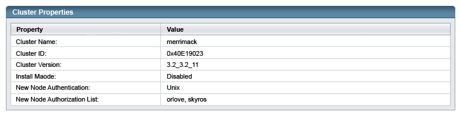
Listings of objects (typically would be more than the two data columns shown here):
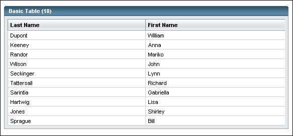
These two examples are very simple. However, many tables also contain elements that users can manipulate, including:
A table with callouts to all of these features is shown below. Details are discussed in the remaining sections of this chapter.
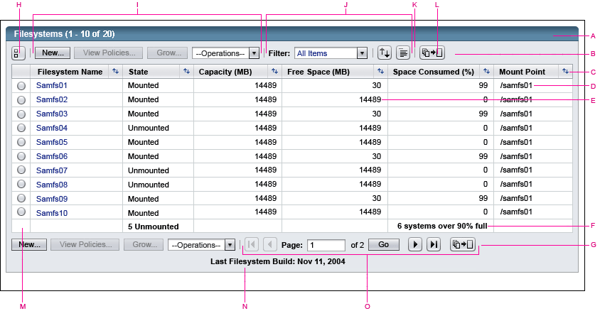
A)
Table Title Bar
B) Action Bar (top)
C) Column Headings Bar, including sort controls
D) Left-Aligned Data
E) Right-Aligned Data
F) Column Footers
G) Action Bar (bottom)
H) Deselect Control (replaced with select all and deselect all controls for multiple selection tables)
I) Table Actions (buttons and drop-down menu)
J) View-Changing Controls (filter menu and icons)
K) Separator Bar
L) Vertical Pagination Control
M) Selection Column
N) Table Footer
O) Pagination Controls
 When a lighter weight table is needed outside the portal, just use the standard table and leave off the action bar. Only use the portal light weight table inside portals. See 8.7.2 Portlet Table for more information about portlet tables.
When a lighter weight table is needed outside the portal, just use the standard table and leave off the action bar. Only use the portal light weight table inside portals. See 8.7.2 Portlet Table for more information about portlet tables.
Tables organize data into a series of columns and rows. Each field in a table is called a cell.
 Tables
must have these elements:
Tables
must have these elements:
 Align
table columns and their column headings based on
the type of information they contain, as follows:
Align
table columns and their column headings based on
the type of information they contain, as follows:
 If a table cell includes an alarm, the alarm severity icon must be left-aligned and centered vertically. The alarm label (for example, "Critical") or the count of the number of those alarms must appear to its right. In addition, the background of the table cell must be highlighted as shown below. Here is an example:
If a table cell includes an alarm, the alarm severity icon must be left-aligned and centered vertically. The alarm label (for example, "Critical") or the count of the number of those alarms must appear to its right. In addition, the background of the table cell must be highlighted as shown below. Here is an example:
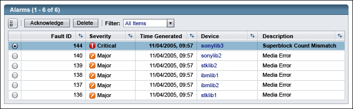
 Table
titles for tables which are currently paginated should be appended with the
range of items currently displayed and the total number of items in the table.
For example, "(1 - 25 of 200)". If
a table is not currently paginated, the title should instead be appended with
the number of displayed items. For example, "(18)". Optionally, a
text description can be used after the number where needed for clarification, such
as "Faults (1-25 of 100 alarms)" or "Faults (6 alarms)". Do not show this count for Property Tables, which are discussed in 9.1.5 Property Table
Table
titles for tables which are currently paginated should be appended with the
range of items currently displayed and the total number of items in the table.
For example, "(1 - 25 of 200)". If
a table is not currently paginated, the title should instead be appended with
the number of displayed items. For example, "(18)". Optionally, a
text description can be used after the number where needed for clarification, such
as "Faults (1-25 of 100 alarms)" or "Faults (6 alarms)". Do not show this count for Property Tables, which are discussed in 9.1.5 Property Table
 Avoid creating tables which have horizontal scrolling at a screen resolution of 1024 x 768 pixels with the standard
font size as much as possible. Before having horizontal scrolling, consider if all the data shown is really needed (perhaps it could be shown in a detail page to which the user can drill down), or if column headers could be stacked two lines to reduce their width.
Avoid creating tables which have horizontal scrolling at a screen resolution of 1024 x 768 pixels with the standard
font size as much as possible. Before having horizontal scrolling, consider if all the data shown is really needed (perhaps it could be shown in a detail page to which the user can drill down), or if column headers could be stacked two lines to reduce their width.
 All
tables must be set to 100 percent of the page width. Setting all tables to 100
percent ensures consistent right margins on the page.
All
tables must be set to 100 percent of the page width. Setting all tables to 100
percent ensures consistent right margins on the page.
 For tables whose data will fill only about half the width of the page (with typical data, at a screen resolution of 1024 x 768 pixels with the standard font size) add a blank filler column on the right so the data does not spread too far apart. This blank filler column on the right should not have a vertical line to the left of it and has no text in the column header.
For tables whose data will fill only about half the width of the page (with typical data, at a screen resolution of 1024 x 768 pixels with the standard font size) add a blank filler column on the right so the data does not spread too far apart. This blank filler column on the right should not have a vertical line to the left of it and has no text in the column header.
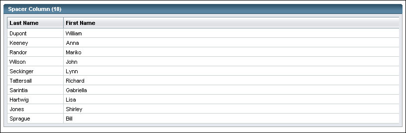
 Use
hyperlinks for items in tables that need to link to other pages. See 9.2
Embedded Table Navigation.
Use
hyperlinks for items in tables that need to link to other pages. See 9.2
Embedded Table Navigation.
 When showing true/false or yes/no type values, use self-contained descriptive terms if at all possible. This allows the user to read and understand the value even if the column header is scrolled out of view. For example, Enabled/Disabled can be understood without the column header for context, while Yes/No, without being able to see an Enabled column header above it, is meaningless.
When showing true/false or yes/no type values, use self-contained descriptive terms if at all possible. This allows the user to read and understand the value even if the column header is scrolled out of view. For example, Enabled/Disabled can be understood without the column header for context, while Yes/No, without being able to see an Enabled column header above it, is meaningless.
 When the user selects one or more rows in the table, indicate those selections by highlighting the selected row(s).
When the user selects one or more rows in the table, indicate those selections by highlighting the selected row(s).
 If there is general information to show about the table, such as the date the data was last updated, etc., show that in the footer of the table.
If there is general information to show about the table, such as the date the data was last updated, etc., show that in the footer of the table.
 If a footer is used, center the text of the footer unless the table supports maintaining selections which are not displayed (see 9.4.5 Maintaining Non-Displayed Selections for more information). If non-displayed selections are maintained, place the general text left-aligned in the footer, to make room for the count of the Selections Not Displayed on the right of the footer.
If a footer is used, center the text of the footer unless the table supports maintaining selections which are not displayed (see 9.4.5 Maintaining Non-Displayed Selections for more information). If non-displayed selections are maintained, place the general text left-aligned in the footer, to make room for the count of the Selections Not Displayed on the right of the footer.
 If
it is necessary to emphasize textual table data, use bold text. Use text bolding
judiciously so its use for emphasis is maintained. If many data values are bolded,
nothing will be emphasized. Also, do not use bold text for alarm conditions
because there are alarm icons for this purpose (see Chapter 16 Alarms and Status Indicators). One good example of this would be in a table showing firmware of various hardware systems, bolding the firmware which is not the most up to date. Here is a second example showing bolded
values where the percentage of space consumed exceeds a threshold and where
the amount of free space has fallen below a threshold:
If
it is necessary to emphasize textual table data, use bold text. Use text bolding
judiciously so its use for emphasis is maintained. If many data values are bolded,
nothing will be emphasized. Also, do not use bold text for alarm conditions
because there are alarm icons for this purpose (see Chapter 16 Alarms and Status Indicators). One good example of this would be in a table showing firmware of various hardware systems, bolding the firmware which is not the most up to date. Here is a second example showing bolded
values where the percentage of space consumed exceeds a threshold and where
the amount of free space has fallen below a threshold:
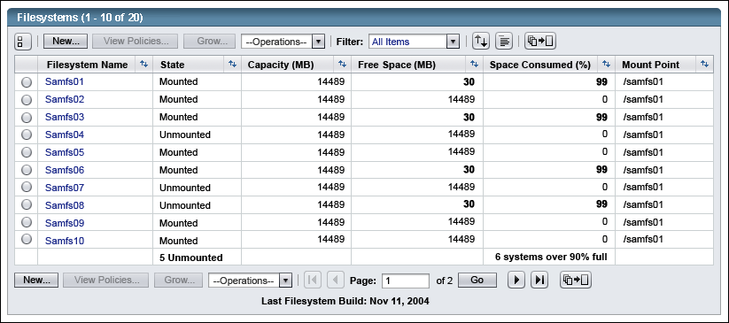
 If it will not be obvious to the user what bold text represents, include text above the table describing the meaning of bold values.
If it will not be obvious to the user what bold text represents, include text above the table describing the meaning of bold values.
 If there are 2 or more columns which form a subset group, or are variations on a type of value, they can be grouped together under a spanning column header like this:
If there are 2 or more columns which form a subset group, or are variations on a type of value, they can be grouped together under a spanning column header like this:
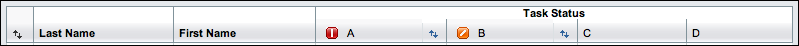
An empty table is a table that contains no items.
 To
display an empty table, display its column headings and a single table data
row. This row, which consists of one cell that spans all columns, should be
blank except for a left-aligned text message. The message will take one of two forms depending upon whether or not a filter is applied to the table:
To
display an empty table, display its column headings and a single table data
row. This row, which consists of one cell that spans all columns, should be
blank except for a left-aligned text message. The message will take one of two forms depending upon whether or not a filter is applied to the table:
 Specifically,
if the table is empty, display this message: "No items found." Or,
if the user can add items to the table, display this message: "No items
found. To add an item, <perform-this-action>."
Specifically,
if the table is empty, display this message: "No items found." Or,
if the user can add items to the table, display this message: "No items
found. To add an item, <perform-this-action>."
Make the message as specific as possible. For example: "No files to monitor were found. To add a file to monitor, <perform-this-action>."
Here is an example of an empty table when no filter is applied.
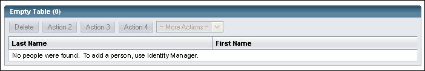
Here is an example of an empty table when a filter is applied.
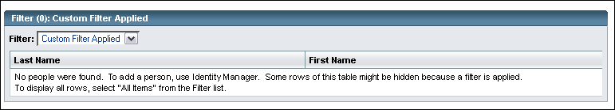
 When a table is empty, table buttons that
depend on a selection should become disabled, as discussed in 9.4.4 Dynamic Enabling and Disabling of Table Actions.
When a table is empty, table buttons that
depend on a selection should become disabled, as discussed in 9.4.4 Dynamic Enabling and Disabling of Table Actions.
 When displaying inapplicable or unexpectedly empty cells, use this dash
image:
When displaying inapplicable or unexpectedly empty cells, use this dash
image:  with the tool tip: "Not Applicable" or "Not Available",
as appropriate. Do not do this for a value that is truly null, such as
an empty alarm cell or a comment field which is blank, neither of which should
have the dash image.
with the tool tip: "Not Applicable" or "Not Available",
as appropriate. Do not do this for a value that is truly null, such as
an empty alarm cell or a comment field which is blank, neither of which should
have the dash image.
Here is an example showing the dash image for cells that are not applicable:
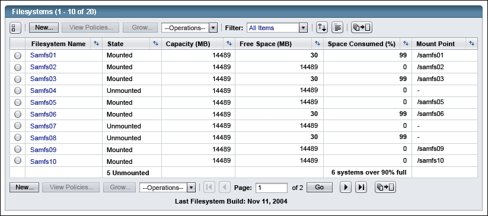
 Also use the dash image for cells that contain user interface elements such as checkboxes or
drop-down lists when these elements are not applicable, including the selection column. Simply not displaying the inapplicable user interface element can appear as if the page just did not paint correctly.
Also use the dash image for cells that contain user interface elements such as checkboxes or
drop-down lists when these elements are not applicable, including the selection column. Simply not displaying the inapplicable user interface element can appear as if the page just did not paint correctly.
When displaying properties for a single object, a Property Table might be
useful. A Property Table typically includes two data columns. The first column
identifies the properties of the object, and the second column displays the
values for each of the properties. The remaining width of the table displays
a third, blank column to keep the first two columns next
to one another while still having the table fill the full screen width.
Here is an example:
 Use
these considerations to decide between using a Property Table and using a layout
of simple fields as in 6.9 Property Page Example:
Use
these considerations to decide between using a Property Table and using a layout
of simple fields as in 6.9 Property Page Example:
 Label
the first column heading of a Property Table "Property", and display the list
of object properties in this column.
Label
the first column heading of a Property Table "Property", and display the list
of object properties in this column.
 Label
the second column heading of a Property Table "Value", and display each property's
value in this column.
Label
the second column heading of a Property Table "Value", and display each property's
value in this column.
 As with standard tables, for property tables whose data will fill only about half the width of the page (with typical data, at a screen resolution of 1024 x 768 pixels with the standard font size) add a blank filler column on the right so the data does not spread too far apart. This blank filler column on the right should not have a vertical line to the left of it, and has no text in the column header.
As with standard tables, for property tables whose data will fill only about half the width of the page (with typical data, at a screen resolution of 1024 x 768 pixels with the standard font size) add a blank filler column on the right so the data does not spread too far apart. This blank filler column on the right should not have a vertical line to the left of it, and has no text in the column header.
 Do not include a row count in the table header of property tables.
Do not include a row count in the table header of property tables.
See the interactive example at http://webdev2.sun.com/example/faces/table/table.jsp, or for other permutations of the table, see the index at http://webdev2.sun.com/example/faces/table/index.jsp
One of the most common forms of navigation is the use of hyperlinks inside a table. Typically, these links cause the current page to refresh with new content, or they open a pop-up window. The hyperlinked text for each command should not be underlined, except when the mouse is over it. This is consistent with other hyperlinking within the content area. Many examples of embedded table navigation are provided in these guidelines. Here is one example:
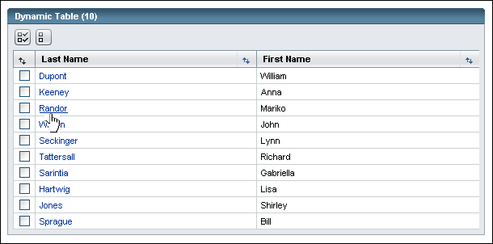
Table selection refers to the user's ability to identify one or more table rows for some purpose. Some tables allow for the selection of only one row at a time (single selection), while others allow for the selection of multiple rows (multiple selection). These guidelines explain how to design both types of selection in tables.
 When a row is selected in a table, whether that table allows single selection or multiple selection (see below), the selected row(s) should be highlighted.
When a row is selected in a table, whether that table allows single selection or multiple selection (see below), the selected row(s) should be highlighted.
 When the table includes a selection column but there are rows which cannot be selected, or upon which no action can be taken, replace the radio button or checkbox with this dash image:
When the table includes a selection column but there are rows which cannot be selected, or upon which no action can be taken, replace the radio button or checkbox with this dash image:  with the tool tip: "Not Available".
with the tool tip: "Not Available".
This is a clearer and more consistent design than displaying disabled radio buttons or checkboxes for these rows, since a disabled item indicates it can be enabled through some user action. Also, simply not displaying the inapplicable user interface element can appear as if the page just did not paint correctly.
 Except for tables which allow non-displayed selections (see 9.4.5 Maintaining Non-Displayed Selections for more information), object selection is not persistent across paginated (see 9.5.4 Vertical Pagination in Tables) and sorted (see 9.5.2 Table Sorting) tables. In other words, the state of a selected item that is no longer visible as the result of a pagination, filtering, new row insertion, or a sort action changes to an unselected state.
Except for tables which allow non-displayed selections (see 9.4.5 Maintaining Non-Displayed Selections for more information), object selection is not persistent across paginated (see 9.5.4 Vertical Pagination in Tables) and sorted (see 9.5.2 Table Sorting) tables. In other words, the state of a selected item that is no longer visible as the result of a pagination, filtering, new row insertion, or a sort action changes to an unselected state.
 When
only a single table row can be selected at a time, insert a column of radio
buttons as the leftmost column in the table.
When
only a single table row can be selected at a time, insert a column of radio
buttons as the leftmost column in the table.
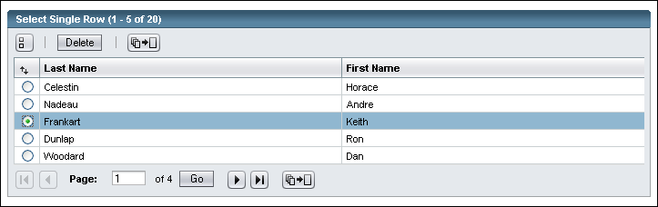
 If
appropriate, provide a default radio button selection when the table is first
displayed. For the default selection, select either the first or the most appropriate
item in the list of radio buttons. If no item is appropriate for default selection,
then provide no initial selection.
If
appropriate, provide a default radio button selection when the table is first
displayed. For the default selection, select either the first or the most appropriate
item in the list of radio buttons. If no item is appropriate for default selection,
then provide no initial selection.
 If
the table has no default radio button selection, consider providing a control
to reset the selection to this initial state if doing so makes sense, given
the use of the table. A "reset" iconic button can serve this
purpose. Thus, if a radio button is selected, the user can deselect it by
clicking this reset button.
If
the table has no default radio button selection, consider providing a control
to reset the selection to this initial state if doing so makes sense, given
the use of the table. A "reset" iconic button can serve this
purpose. Thus, if a radio button is selected, the user can deselect it by
clicking this reset button.
 If you use a reset button, place the button at the far left of the table's top action bar, as shown below. Insert a separator bar after it.
If you use a reset button, place the button at the far left of the table's top action bar, as shown below. Insert a separator bar after it.
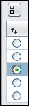
 When
multiple rows can be selected at a time, insert a column of checkboxes as the
leftmost column in the table.
When
multiple rows can be selected at a time, insert a column of checkboxes as the
leftmost column in the table.
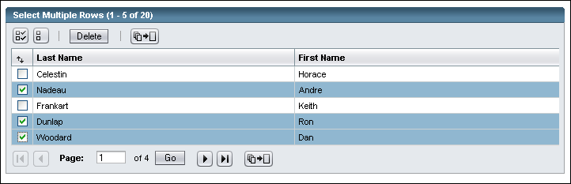
 If
the table contains numerous rows, provide a Select All action to allow users
to select all rows displayed in the table at once. Also provide a Deselect
All action to allow users to deselect all displayed rows at once.
If
the table contains numerous rows, provide a Select All action to allow users
to select all rows displayed in the table at once. Also provide a Deselect
All action to allow users to deselect all displayed rows at once.
Users might want all rows selected, or they might want to select all rows as a first step in selecting most rows. In the latter case, users would then deselect those rows that should not be selected. The Deselect All action helps users who want to clear an existing selection before making a new selection. Provide these actions using iconic buttons within the table. The Select All button allows users to select all rows displayed in the table. The Deselect All button allows users to return all the checkboxes to their unselected state. (Consideration was given to using a checkbox on top of the column for select all and deselect all, as is seen other places, but the ability for the user to directly select all or directly deselect all, without them having to figure out to do the other action first, led to the decision to use the buttons instead.)
 When
vertical pagination (see 9.5.4 Vertical Pagination in Tables)
is in use, the Select All and Deselect All buttons pertain only to the rows
currently displayed in the table.
When
vertical pagination (see 9.5.4 Vertical Pagination in Tables)
is in use, the Select All and Deselect All buttons pertain only to the rows
currently displayed in the table.
 If
you use the Select All and Deselect All actions, place them at the far left of the table's top action bar, as shown below. Insert a separator bar after them.
If
you use the Select All and Deselect All actions, place them at the far left of the table's top action bar, as shown below. Insert a separator bar after them.
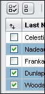
Most tables are interactive and allow users to modify them. Users can select and act upon objects within a table. Users can also change the appearance and organization of tables (dividing table contents into a number of pages, for example) or the order in which table components appear (sort order). To perform table actions, users have a number of tools, including buttons, drop-down menus, and column headers that implement sorting.
These guidelines support two kinds of local actions:
There is an additional contrast between actions that affect objects inside a table and actions that change how the content in a table is viewed. Such "view-changing" actions define, for example, how the objects are arranged in the table (based on the sort order) or which objects are displayed in the table (based on the filter selected). For more information, see 9.5 Changing Table Views.
Some table actions require a selection, while others do not. Some table actions allow multiple selections. Consider the following typical use of table actions for a table that contains a list of servers. The table actions allow users to add new servers, to delete existing servers, and to edit a server's properties. These actions (New, Delete, and Edit) require different types of object selection. The Delete and Edit actions require users to select from the list of servers in the table. Though users can delete multiple servers at once from the table, they can typically edit only one server at a time. In contrast, users execute the New action without selecting any items in the table.
Subsequent sections use these terms to differentiate these three types of object selection:
This discussion focuses on actions associated with objects listed in a table. However, in certain situations, these actions might also apply to nontabular data where items are selected from a group. For example, a user may be able to perform an action on an aggregate displayed in a graphical view of related objects, as discussed in 10.6.3 Contextual Menus.
 As noted in 9.1.2 Table Characteristics, if the table typically does
not fit on one screen (with typical data, at a screen resolution of 1024 x 768 pixels with the standard font size), duplicate the table actions in the top and bottom action
bars. Here is an example:
As noted in 9.1.2 Table Characteristics, if the table typically does
not fit on one screen (with typical data, at a screen resolution of 1024 x 768 pixels with the standard font size), duplicate the table actions in the top and bottom action
bars. Here is an example:
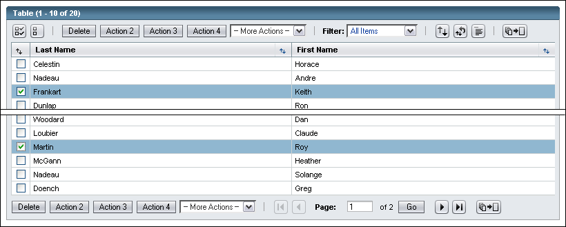
 If the application has one or two actions that users frequently need to use
to operate on the whole table, consider including an explicit action for handling
this situation (for example, a button labeled "Delete All Closed Alarms"). This can be especially useful for tables which typically have enough rows that they are usually shown paginated.
If the application has one or two actions that users frequently need to use
to operate on the whole table, consider including an explicit action for handling
this situation (for example, a button labeled "Delete All Closed Alarms"). This can be especially useful for tables which typically have enough rows that they are usually shown paginated.
 Require
confirmation from the user through means of a JavaScript (TM) alert message before
a destructive or long table action is performed. Confirmation
is especially important on actions in drop down menus, because users can inadvertently
select an unintended item while arrowing down. For information on alert
messages, see Chapter 14, Alerts and Messages.
Require
confirmation from the user through means of a JavaScript (TM) alert message before
a destructive or long table action is performed. Confirmation
is especially important on actions in drop down menus, because users can inadvertently
select an unintended item while arrowing down. For information on alert
messages, see Chapter 14, Alerts and Messages.
 For table actions that require additional user input, include ellipsis points
after the action name (for example, "New...").
For guidelines on when to use ellipsis points, see 7.1.6
Button Labels.
For table actions that require additional user input, include ellipsis points
after the action name (for example, "New...").
For guidelines on when to use ellipsis points, see 7.1.6
Button Labels.
 For accessibility reasons, inform users when a table action opens a pop-up window
(see the following implementation guideline).
For accessibility reasons, inform users when a table action opens a pop-up window
(see the following implementation guideline).
 For this purpose, you can place the appropriate text in a tool tip. For example, if an application
is started in a new main browser window that contains a device manager, the
text might read: "Start a device manager for this object (Opens a New Window)."
To implement the tool tip, place the appropriate text in the HTML "title" attribute of the table action. Similar text should be placed in the HTML "alt" attribute of the image for accessibility. That alt text is often identical to the tool tip, but may be made shorter and simpler. For more information on accessibility guidelines, see Appendix
D, Accessibility Requirements.
For this purpose, you can place the appropriate text in a tool tip. For example, if an application
is started in a new main browser window that contains a device manager, the
text might read: "Start a device manager for this object (Opens a New Window)."
To implement the tool tip, place the appropriate text in the HTML "title" attribute of the table action. Similar text should be placed in the HTML "alt" attribute of the image for accessibility. That alt text is often identical to the tool tip, but may be made shorter and simpler. For more information on accessibility guidelines, see Appendix
D, Accessibility Requirements.
 Leave
objects selected after an action is performed unless doing so would make no
sense in your application.
Leave
objects selected after an action is performed unless doing so would make no
sense in your application.
 If
the user takes an additional action irrelevant of the selections, such as creating
a new record, then clear the selections upon completion of that action. They
are not cleared until the action is completed, as the user might click New and
then cancel, and be disappointed to find the selections gone.
If
the user takes an additional action irrelevant of the selections, such as creating
a new record, then clear the selections upon completion of that action. They
are not cleared until the action is completed, as the user might click New and
then cancel, and be disappointed to find the selections gone.
 Make all table action buttons Secondary Buttons. See 7.1 Action Buttons for more information on button styles.
Make all table action buttons Secondary Buttons. See 7.1 Action Buttons for more information on button styles.
 Use similar button labels to those discussed in 7.1.6 Button Labels. However, generally do not add a noun to New buttons (such as "New Filesystem" or "New Server Option") when the table title already includes that noun.
Use similar button labels to those discussed in 7.1.6 Button Labels. However, generally do not add a noun to New buttons (such as "New Filesystem" or "New Server Option") when the table title already includes that noun.
Several design options are available for table actions. The choice depends on the number of actions and the types of actions (no selection, single selection, and multiple selection) that the table needs to support. These guidelines are intended to help you understand the complex set of usability trade-offs related to designing table actions. Depending on the number and type of actions, five options are currently available for designing table actions:
Embedded table actions are ideal for single selection actions. Buttons (if few actions) and a drop-down menu (if many actions) are useful for multiple selection actions. Depending upon the application, you can use certain different combinations of these designs at the same time. However, if an application uses too many different designs, there is a danger of confusing the user. Whichever option or options you choose, always strive for internal consistency and a lack of clutter in the user interface design.
 Use one or more of the design options described in this section for displaying
all the actions that apply to a table, whether the actions require a selection
or not. Do not create additional types of controls for actions that apply to
the table.
Use one or more of the design options described in this section for displaying
all the actions that apply to a table, whether the actions require a selection
or not. Do not create additional types of controls for actions that apply to
the table.
 Use
buttons when you want to:
Use
buttons when you want to:
Here is an example:

 Consider
these usability trade-offs of using only buttons for table actions:
Consider
these usability trade-offs of using only buttons for table actions:
 Generally do not display more than four buttons above a single table, though
if only buttons are being used for actions, greater than four buttons are acceptable.
Be sure to consider button text expansion when the buttons are translated into
other locales. If more than four actions are required, another possibility is
to consider using a single drop-down menu or a combination of buttons and a
drop-down menu.
Generally do not display more than four buttons above a single table, though
if only buttons are being used for actions, greater than four buttons are acceptable.
Be sure to consider button text expansion when the buttons are translated into
other locales. If more than four actions are required, another possibility is
to consider using a single drop-down menu or a combination of buttons and a
drop-down menu.
 Use
a single drop-down menu without buttons in these situations:
Use
a single drop-down menu without buttons in these situations:

| Drop-Down Menu Example | Structured Menu Example |
|---|---|
| 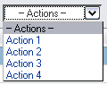 | 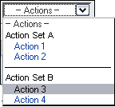 |
 Consider
these usability trade-offs of using a single drop-down menu for table actions:
Consider
these usability trade-offs of using a single drop-down menu for table actions:
 Use the primary object type in the table (for example, "server"
as in "— Server Actions —") as part of the menu label.
If no primary object exists, then use a more generic fallback name (for example,
"— Table Actions —" or "— Actions —"). Use a single em-dash and a nonbreaking
space before ("— ") and after (" —")
the menu label.
Use the primary object type in the table (for example, "server"
as in "— Server Actions —") as part of the menu label.
If no primary object exists, then use a more generic fallback name (for example,
"— Table Actions —" or "— Actions —"). Use a single em-dash and a nonbreaking
space before ("— ") and after (" —")
the menu label.
 Use
a series of em-dashes ("—" or "—" as in "———————")
to separate actions into distinct groups. The series of em-dashes act as a
separator. They should generally be as long as the longest menu item label inside the
menu.
Use
a series of em-dashes ("—" or "—" as in "———————")
to separate actions into distinct groups. The series of em-dashes act as a
separator. They should generally be as long as the longest menu item label inside the
menu.
 If
you want to add additional formatting inside the menu, then use labels and
indenting to name groups of actions listed together.
If
you want to add additional formatting inside the menu, then use labels and
indenting to name groups of actions listed together.
 The implementation of the table guidelines uses the <OPTGROUP> tag to group items in structured menus. This implementation has several interaction benefits, including disabling group labels, but it also facilitates accessibility. The use of the <OPTGROUP> tag enables assistive technologies to read the structure of the menu as well as its content.
The implementation of the table guidelines uses the <OPTGROUP> tag to group items in structured menus. This implementation has several interaction benefits, including disabling group labels, but it also facilitates accessibility. The use of the <OPTGROUP> tag enables assistive technologies to read the structure of the menu as well as its content.
 Design
the drop-down menu such that after a menu item is selected, the menu snaps back
to the first item in the menu (that is, the menu label) before the action is
performed. Table Actions typically requires leaving or reloading the current
page. This way, if the user clicks the Back button on the browser, the page
loads with the menu label selected in the menu.
Design
the drop-down menu such that after a menu item is selected, the menu snaps back
to the first item in the menu (that is, the menu label) before the action is
performed. Table Actions typically requires leaving or reloading the current
page. This way, if the user clicks the Back button on the browser, the page
loads with the menu label selected in the menu.
 To
reduce the number of user steps and to reduce clutter, do not use a Go (for
example, "Submit") button next to action menus. Instead, make these menus exhibit
jump menu behavior, in which the action associated with the menu item is performed
when the user selects a menu item. The key combinations
Alt-Up Arrow and Alt-Down Arrow can still be used to move through the menu without
actuating any of the items inside, which is important for accessibility.
To
reduce the number of user steps and to reduce clutter, do not use a Go (for
example, "Submit") button next to action menus. Instead, make these menus exhibit
jump menu behavior, in which the action associated with the menu item is performed
when the user selects a menu item. The key combinations
Alt-Up Arrow and Alt-Down Arrow can still be used to move through the menu without
actuating any of the items inside, which is important for accessibility.
If your application requires only a small number of single selection actions, then using embedded table actions is the simplest and most direct option. Embedded table actions are different from navigation links in that they typically cause an action, such as Edit or Load, to operate on an object. Conversely, navigation links usually refresh the current page with new content or open a pop-up window.
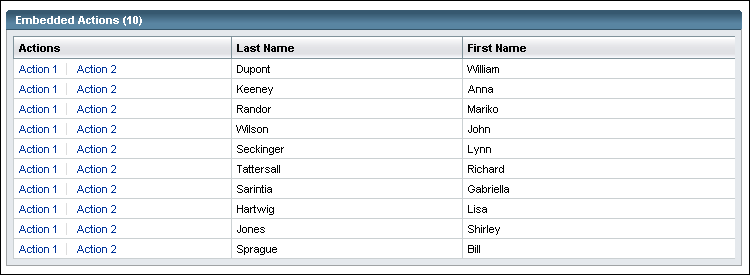
 Embedded table actions have these characteristics:
Embedded table actions have these characteristics:
Embedded table actions are particularly useful when the display is not visually complex, and when an action is frequently used or differs by row.
 Embed actions in the table when they are primarily used as single selection
actions, that is, when the action applies to one row at a time.
Embed actions in the table when they are primarily used as single selection
actions, that is, when the action applies to one row at a time.
 Use verbs when specifying embedded table actions.
Use verbs when specifying embedded table actions.
 Do not use embedded table actions if it is likely that their addition will cause
horizontal scrolling at a screen resolution of 1024 x 768 pixels with the standard
font size.
Do not use embedded table actions if it is likely that their addition will cause
horizontal scrolling at a screen resolution of 1024 x 768 pixels with the standard
font size.
 Avoid disabling embedded table actions. Any actions shown inline should be enabled and available, or not shown.
Avoid disabling embedded table actions. Any actions shown inline should be enabled and available, or not shown.
In some cases, a single embedded table action can be changed (toggled) to the appropriate action based on the current state of the object listed on a given row. This is often appropriate when opposite actions apply to an object based on its state. For example, if embedded table actions include Start and Stop and the applicable action is based on the current state of the object, then if the object is currently stopped, the displayed embedded action would be Start, and vice versa. Do this where applicable instead of having two embedded table actions and disabling the one that does not apply given the object's current state.
Mix embedded table actions with selection-independent actions, if needed. This combination can provide a useful mix of the different methods for offering table actions to users. For example, Edit and Activate (or Deactivate, as appropriate for the each row) actions could be provided as embedded table actions, while the 'New' action could be provided as a button in the action bar.
 Combining embedded table actions with selection-dependent actions should be
done cautiously. Users may not understand why some actions are embedded in the
table while others require selection of a checkbox, and then a button click
or drop-down menu selection.
Combining embedded table actions with selection-dependent actions should be
done cautiously. Users may not understand why some actions are embedded in the
table while others require selection of a checkbox, and then a button click
or drop-down menu selection.
 Any given action should be presented consistently throughout the application.
For example, an Edit action should not appear as an embedded table action in
one table, and then as an "above-the-table" action in another table.
Any given action should be presented consistently throughout the application.
For example, an Edit action should not appear as an embedded table action in
one table, and then as an "above-the-table" action in another table.
 Do not generally embed more than two actions per row. A more firm maximum number
depends on the visual density of the table data as a whole.
Do not generally embed more than two actions per row. A more firm maximum number
depends on the visual density of the table data as a whole.
 Group the embedded table actions so that the shared actions (actions that appear
in every row) come first, followed by actions that differ by row. This organization
gives the table a more ordered appearance.
Group the embedded table actions so that the shared actions (actions that appear
in every row) come first, followed by actions that differ by row. This organization
gives the table a more ordered appearance.
 Consider these usability trade-offs of using embedded table actions:
Consider these usability trade-offs of using embedded table actions:
 Use
buttons and a drop-down menu for table actions in these situations:
Use
buttons and a drop-down menu for table actions in these situations:
Here is an example of a table that uses buttons and a drop-down menu to represent table actions:
 Consider
these usability trade-offs of using buttons and a drop-down menu for table
actions:
Consider
these usability trade-offs of using buttons and a drop-down menu for table
actions:
 Follow
all the requirements specified for designing buttons for table actions (9.4.3.1
Using Only Buttons for Table Actions) and drop-down menus (9.4.3.2
Using a Single Drop-Down Menu for Table Actions) .
Follow
all the requirements specified for designing buttons for table actions (9.4.3.1
Using Only Buttons for Table Actions) and drop-down menus (9.4.3.2
Using a Single Drop-Down Menu for Table Actions) .
 As
with the buttons-only design, try not to display more than four buttons above a
single table. Consider whether displaying four or more buttons clutters
the user interface. If so, consider using buttons for a small number of critical
actions and placing the remaining actions in a drop-down menu.
As
with the buttons-only design, try not to display more than four buttons above a
single table. Consider whether displaying four or more buttons clutters
the user interface. If so, consider using buttons for a small number of critical
actions and placing the remaining actions in a drop-down menu.
 Place
the buttons to the left of the drop-down menu.
Place
the buttons to the left of the drop-down menu.
 When
the drop-down menu includes more of the same type of actions represented in
the buttons, then add the word "More" to the drop-down menu
label (for example, "— More Storage Actions —").
When
the drop-down menu includes more of the same type of actions represented in
the buttons, then add the word "More" to the drop-down menu
label (for example, "— More Storage Actions —").
 Generally, do not combine embedded table actions with other forms of table actions.
However, they may be combined in these situations:
Generally, do not combine embedded table actions with other forms of table actions.
However, they may be combined in these situations:
Here is an example of a table that uses embedded table actions with other forms of table actions:
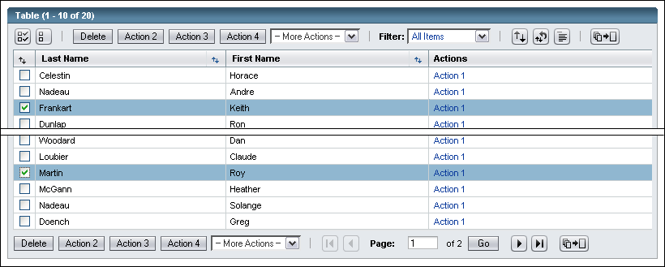
Many desktop applications enable designers to disable actions that are unavailable at any given moment. For example, designers can:
These simple examples represent cases in which actions can be dynamically enabled or disabled entirely on the client without accessing the server. In these cases, the user has simply selected objects listed in an action table (typically by clicking on a checkbox).
Of course, there are other situations in which a designer might want to display a disabled action that would require more complex, application-specific, logic. Typically, the state of the object would determine whether an action would be enabled or disabled. State-based actions, such as "Start" and "Stop", or "Load" and "Unload", are excellent examples of actions that could toggle between an enabled or disabled appearance. Such state-based actions would most likely require server access to verify the state of the object.
 Embedded table actions
should only include available actions for the current state (for
example, by specifying "Load" or "Unload," but not both).
Embedded table actions should never be disabled.
Embedded table actions
should only include available actions for the current state (for
example, by specifying "Load" or "Unload," but not both).
Embedded table actions should never be disabled.
 For drop-down menus, when all menu items are temporarily disabled, disable the individual menu items
instead of disabling the drop-down menu element itself. This allows users to see what actions are
possible, even if they are temporarily unavailable.
For drop-down menus, when all menu items are temporarily disabled, disable the individual menu items
instead of disabling the drop-down menu element itself. This allows users to see what actions are
possible, even if they are temporarily unavailable.
 The
iconic view-changing buttons for Multiple-Column Sort, Custom Filter, Clear Sort, and Table Preferences
should not be dynamically enabled or disabled (see 9.5.6 View-Changing Buttons).
The
iconic view-changing buttons for Multiple-Column Sort, Custom Filter, Clear Sort, and Table Preferences
should not be dynamically enabled or disabled (see 9.5.6 View-Changing Buttons).
 When
an action is disabled, the following should happen:
When
an action is disabled, the following should happen:
 When
an action is subsequently enabled, the following should happen:
When
an action is subsequently enabled, the following should happen:
Here are examples of an action that has been enabled and disabled by the selection of an object:
| Disabled Buttons Example | 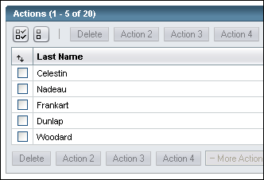 |
|---|---|
| Enabled Buttons Example | 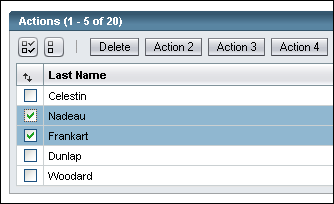 |
| Enabled and Disabled Menu Items Example | 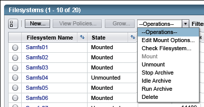 |
 If the user attempts to perform a state setting action on multiple rows, and some of those rows already have that state set, simply allow the action to be performed on the other rows rather than disabling the action or presenting an error. For example, if the user has selected all the rows, and one of them is already in the state "online", do not disable the action to set all to be online or give an error if the user attempts to do so. Instead, just set the others to be online. This makes for a less cumbersome user interface, since the user's objective will be accomplished anyway. This only applies to actions which set the state of items.
If the user attempts to perform a state setting action on multiple rows, and some of those rows already have that state set, simply allow the action to be performed on the other rows rather than disabling the action or presenting an error. For example, if the user has selected all the rows, and one of them is already in the state "online", do not disable the action to set all to be online or give an error if the user attempts to do so. Instead, just set the others to be online. This makes for a less cumbersome user interface, since the user's objective will be accomplished anyway. This only applies to actions which set the state of items.
 There are cases where disabling a button may not give the best user interface, as the user may not be able to infer why the button is disabled, or what to do in order to enable it. For these cases, an alternative to disabling the button or table action menu item is to instead provide an error message when the user clicks it at an inappropriate time. For these, a JavaScript alert (see Chapter 14, Alerts and Messages)
is preferred over an inline alert because a JavaScript alert:
There are cases where disabling a button may not give the best user interface, as the user may not be able to infer why the button is disabled, or what to do in order to enable it. For these cases, an alternative to disabling the button or table action menu item is to instead provide an error message when the user clicks it at an inappropriate time. For these, a JavaScript alert (see Chapter 14, Alerts and Messages)
is preferred over an inline alert because a JavaScript alert:
A couple of examples are provided below.

If a table allows a selected row to remain selected even when the user moves to a different page, that table is maintaining non-displayed selections. Tables supporting non-displayed selections are allowed when needed, but should be avoided if at all possible. Non-displayed selections can easily lead to user errors, such as deleting additional records unintentionally. Moreover, the user will often not know they have made this error, which makes the situation more serious.
 Only provide tables supporting non-displayed selections when truly necessary for the application, as they can easily cause user errors when users act on rows on which they did not intend to act.
Only provide tables supporting non-displayed selections when truly necessary for the application, as they can easily cause user errors when users act on rows on which they did not intend to act.
 Never provide tables supporting non-displayed selections if only one selection at a time is allowed. If there can only be one selection at a time anyway, there is no reason to allow it to be out of sight when being acted upon.
Never provide tables supporting non-displayed selections if only one selection at a time is allowed. If there can only be one selection at a time anyway, there is no reason to allow it to be out of sight when being acted upon.
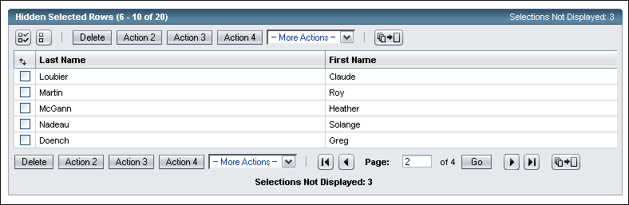
For tables supporting non-displayed selections:
The table should display "Selections Not Displayed: N" on right side of table titlebar and centered in the table footer, where N is a numeric value dynamically updated on each page load. If the table already has content to display in the footer, that content should be left-aligned and "Selections Not Displayed: N" should be right-aligned in the footer. This should be shown even when there are 0 non-displayed selections currently, as an indicator to the user that they can select items on this page and then proceed to other pages to make additional selections, before taking actions.
Selections Not Displayed: 2
Total Selections: 10Archive all selections?
If a warning was already appropriate for that table action, the confirmation message should specify how many non-displayed selections will be affected, and then the warning regarding that action. The following format should be used for the messages. For example, if the action was deletion, the message should be:
Selections Not Displayed: 2
Total Selections: 10
Delete all selections? This cannot be undone.
The delete confirmation message above is available from the table component. Other confirmation messages -- with or without additional warnings regarding consequences -- need to be written by the developer including the description of what action will be performed (such as including the word "Archive" in the first example above).
Usually provide a basic filter (see 9.5.1.1 Basic Table Filtering) which displays only selected items, called "Selected Items" (without the quotes). This will allow the user to see all selected items, even when they had previously been spread across multiple pages.
There are two basic ways to change the visible content of a table to make it easier for users to find and view information included in the table. Filtering displays a subset of material found in the table. Sorting enables users to arrange data in ways that make the most sense for them. Sorting can be done directly by manipulating column heads, or can be done by calling up a multi-column sort panel.
Table filtering allows users to reduce the display of data to items that meet a specific set of criteria. Table filtering is optional but might be useful when users need to focus on a specific subset of the data being displayed at any given time. Two types of table filtering are available: basic and custom. Basic table filtering uses elements that are displayed in a table's action bar and is restricted to a predetermined set of options. In contrast, custom table filtering uses elements that are displayed in an inserted panel below the table's action bar and may include many options to include or exclude data.
Unlike search, filter is a tool used to draw out a subset from an existing group of objects based on inclusive criteria, and does not substantially change the format of the original object presentation. Filtering shows the results in the original table, while search shows it in a new search results display. See Chapter 12 Search to see how search is different.
 Preserve the filter unless the user explicitly changes it.
Preserve the filter unless the user explicitly changes it.
In particular, remember to preserve the filter when:
 The filter should be remembered while the user is on that page, even while moving through "pages" of the table data and refreshing the page.
The filter should be remembered while the user is on that page, even while moving through "pages" of the table data and refreshing the page.
 In most cases, the filter should be remembered if the user drills down to a page from it and comes back up.
In most cases, the filter should be remembered if the user drills down to a page from it and comes back up.
Basic table filtering involves filtering data from a predetermined list of items. For example, you might want to permit users to filter a heterogeneous list of managed objects by type. In this case, the drop-down menu could list all of the possible object types. Users would be able to choose one object type for inclusion.
Basic filtering should be used when the collection of objects to be filtered can be displayed inside a table. Typically, this case occurs when the table already contains all the objects under consideration but is too large to comfortably view a specific subset of the objects. However, if the collection of objects is so diverse that it does not make sense to display them in a table, then a search action should be used to collect them together into a results page. See 12.1 Quick Search for more details.
 To
allow user control over table filtering, insert the text label "Filter" and
a drop-down menu with the available options in the action bar. The UI
elements for basic filtering should appear to the right of table actions but
to the left of iconic buttons and the vertical pagination toggle. Place separator bars between the
basic filter controls and the other UI elements.
See 9.5.6 View-Changing Buttons for more details.
To
allow user control over table filtering, insert the text label "Filter" and
a drop-down menu with the available options in the action bar. The UI
elements for basic filtering should appear to the right of table actions but
to the left of iconic buttons and the vertical pagination toggle. Place separator bars between the
basic filter controls and the other UI elements.
See 9.5.6 View-Changing Buttons for more details.
 The all-inclusive value for the Filter dropdown is "All Items". This can be made more specific, such as "All Servers", or "All Updates", but should not say simply "All" as "Filter: All" is confusing with all the filters being applied.
The all-inclusive value for the Filter dropdown is "All Items". This can be made more specific, such as "All Servers", or "All Updates", but should not say simply "All" as "Filter: All" is confusing with all the filters being applied.
 Usually provide a basic filter which displays only selected items for tables which support non-displayed selections (see 9.4.5 Maintaining Non-Displayed Selections for more information). This will allow the user to see all selected items, even when they had previous been spread across multiple pages.
Usually provide a basic filter which displays only selected items for tables which support non-displayed selections (see 9.4.5 Maintaining Non-Displayed Selections for more information). This will allow the user to see all selected items, even when they had previous been spread across multiple pages.
 When first displaying the table, do not use any filter at all. The filter drop-down
menu should show "All Items" as the default value. The
exception for this is when the user comes to the table with an implicit filter,
such as clicking on a particular alarm severity in the masthead.
When first displaying the table, do not use any filter at all. The filter drop-down
menu should show "All Items" as the default value. The
exception for this is when the user comes to the table with an implicit filter,
such as clicking on a particular alarm severity in the masthead.
 When
a user initiates a filter, show only the items that match the filter criteria.
In other words, the basic table filter is "inclusive." For example,
"Critical", "Alarmed", or "Submitted Today."
When
a user initiates a filter, show only the items that match the filter criteria.
In other words, the basic table filter is "inclusive." For example,
"Critical", "Alarmed", or "Submitted Today."
 If you cannot simply and clearly expressexpress which values are displayed by specifying what is included, instead use
the word "Not" before the criterion of what is excluded (for example,
"Not Minor").
If you cannot simply and clearly expressexpress which values are displayed by specifying what is included, instead use
the word "Not" before the criterion of what is excluded (for example,
"Not Minor").
Basic Table Filtering is conceptually similar to 12.1.1.1 Global Quick Search: Predefined Queries and 12.1.2.1 Local Quick Search: Predefined Queries in that they offer predefined criteria. However Local Quick Search is usable across any Local scope (not limited to a single table on a single page) and both of the searches present their results on a dedicated results page, while filters just limit what is seen on an otherwise unchanged page.
Here is an example of a table using basic filtering, where all items are currently displayed:
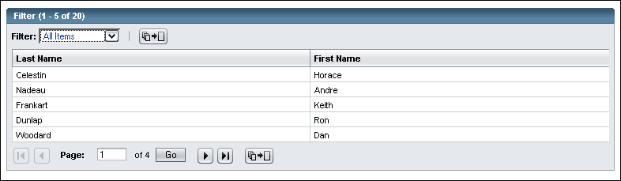
 When
the user initiates a filter, use all the table data to determine the filter, even
when the table is paginated.
When
the user initiates a filter, use all the table data to determine the filter, even
when the table is paginated.
A paginated table uses vertical pagination buttons and elements to move table rows in and out of view. In a paginated table, filtering might change which data rows are displayed in the table.
 If
a filter operation results in previously selected items no longer
being visible, unless the table allows Selections Not Displayed (see 9.4.5 Maintaining Non-Displayed Selections for more information) two things must happen:
If
a filter operation results in previously selected items no longer
being visible, unless the table allows Selections Not Displayed (see 9.4.5 Maintaining Non-Displayed Selections for more information) two things must happen:
 After
the user performs a filter operation,
After
the user performs a filter operation,
 Display
or hide new objects in the table based on the current filter.
Display
or hide new objects in the table based on the current filter.
 After adding a new record to a filtered table, always show a confirmation inline
alert unless you can be certain that the new row will appear despite the filtering.
After adding a new record to a filtered table, always show a confirmation inline
alert unless you can be certain that the new row will appear despite the filtering.
Custom table filtering allows users to filter table data by more than one criterion at a time. For example, users might want to filter a table of alarms by both alarm severity (critical alarms only) and object type (storage arrays only).
 To allow users to do custom filtering, include an option in the Filter drop-down menu called "Custom Filter...". Choosing this option causes a panel to be inserted below the action bar which contains user interface elements for specifying custom filter criteria.
To allow users to do custom filtering, include an option in the Filter drop-down menu called "Custom Filter...". Choosing this option causes a panel to be inserted below the action bar which contains user interface elements for specifying custom filter criteria.
 Use the following guidelines for the filter drop-down menu:
Use the following guidelines for the filter drop-down menu:
The Custom Filter panel may contain a variety of different simple UI elements for specifying filtering criteria. These elements may include drop-down menus, checkbox sets, radio button sets, and so forth. The choice of UI element should depend on the datatype being filtered.
 Label the Custom Filter panel "Custom Filter."
Label the Custom Filter panel "Custom Filter."
 Provide buttons labeled "OK" and "Cancel" at the bottom of the panel. Make the OK button a primary button, and the Cancel button a secondary button.
Provide buttons labeled "OK" and "Cancel" at the bottom of the panel. Make the OK button a primary button, and the Cancel button a secondary button.
For information about primary and secondary button styles, see 7.1 Action Buttons.
Here is an example of a table with an inserted Custom Filter panel:
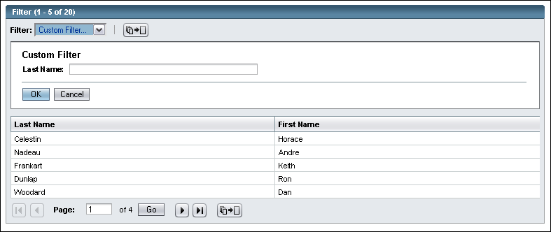
 Arrange the criteria options in the Custom Filter panel from top to bottom. However, if there are numerous fields, and horizontal space allows, use columns of criteria options to maximize use of the horizontal space available while minimizing the amount of vertical space needed for the criteria options.
Arrange the criteria options in the Custom Filter panel from top to bottom. However, if there are numerous fields, and horizontal space allows, use columns of criteria options to maximize use of the horizontal space available while minimizing the amount of vertical space needed for the criteria options.
 Inclusive
filters are the default for the Custom Filter panel; however, both
inclusive and exclusive filters may be used. If an exclusive filter is used,
it must be explicitly labeled as such. For example, the menu label might be
either "Exclude..." or the specific item might say "Not X."
Inclusive
filters are the default for the Custom Filter panel; however, both
inclusive and exclusive filters may be used. If an exclusive filter is used,
it must be explicitly labeled as such. For example, the menu label might be
either "Exclude..." or the specific item might say "Not X."
 When the Custom Filter panel is displayed, use the data from the last applied custom filter to determine the defaults for the filter criteria.
The first time the Custom Filter panel is displayed, the default settings would be specified by the application developer.
When the Custom Filter panel is displayed, use the data from the last applied custom filter to determine the defaults for the filter criteria.
The first time the Custom Filter panel is displayed, the default settings would be specified by the application developer.
 When the user clicks on the OK button in the Custom Filter panel, the filter criteria is applied, and the Custom Filter panel is removed. The drop-down menu displays "Custom Filter Applied".
When the user clicks on the OK button in the Custom Filter panel, the filter criteria is applied, and the Custom Filter panel is removed. The drop-down menu displays "Custom Filter Applied".
 Once a custom filter has been entered and the OK button clicked, the text ": Custom Filter Applied" should be appended to the table
title (as shown in the following example).
Once a custom filter has been entered and the OK button clicked, the text ": Custom Filter Applied" should be appended to the table
title (as shown in the following example).
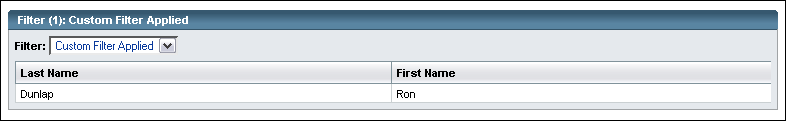
 If the user clicks the Cancel button in the Custom Filter panel, remove the Custom Filter panel from display and return the drop-down menu to display the previously displayed selection, as if the "Custom Filter..." drop-down menu selection had never been made. Do this so that the selection in the Filter drop-down will always match what is shown in the table.
If the user clicks the Cancel button in the Custom Filter panel, remove the Custom Filter panel from display and return the drop-down menu to display the previously displayed selection, as if the "Custom Filter..." drop-down menu selection had never been made. Do this so that the selection in the Filter drop-down will always match what is shown in the table.
 If the user invokes the Custom Filter panel, enters criteria, and then presses the Cancel button, the next time the panel is displayed, show the criteria that was last applied. The criteria that had been specified but never applied is lost.
If the user invokes the Custom Filter panel, enters criteria, and then presses the Cancel button, the next time the panel is displayed, show the criteria that was last applied. The criteria that had been specified but never applied is lost.
This same behavior is also true if the user simply switches to a different panel such as Table Preferences or Multiple-Column Sort without applying the custom filter. Criteria that had been specified but never applied is lost.
 Note that it is the responsibility of the application developer to maintain information about the last applied filter.
Note that it is the responsibility of the application developer to maintain information about the last applied filter.
 When the Custom Filter panel is opened, move the keyboard focus to the first filter field automatically.
When the Custom Filter panel is opened, move the keyboard focus to the first filter field automatically.
 If the user presses the Enter key while on a field in the Custom Filter panel, trigger the OK button if at all possible. If this is not possible due to having many filter fields, make sure pressing Enter at least does not actuate any buttons outside the panel.
If the user presses the Enter key while on a field in the Custom Filter panel, trigger the OK button if at all possible. If this is not possible due to having many filter fields, make sure pressing Enter at least does not actuate any buttons outside the panel.
 If the user chooses "All Items" or a basic filter from the Filter drop-down menu while the Custom Filter panel is displayed, remove the Custom Filter panel, apply the filter associated with the selection in the drop-down menu, and update the table title to indicate the new filter setting.
If the user chooses "All Items" or a basic filter from the Filter drop-down menu while the Custom Filter panel is displayed, remove the Custom Filter panel, apply the filter associated with the selection in the drop-down menu, and update the table title to indicate the new filter setting.
 To clear out a basic or a custom filter, the user must choose a different filter from the Filter drop-down menu. To remove any filtering, the user must choose "All Items" from the Filter drop-down menu.
To clear out a basic or a custom filter, the user must choose a different filter from the Filter drop-down menu. To remove any filtering, the user must choose "All Items" from the Filter drop-down menu.
 After adding a new record to a filtered table, always show a confirmation inline
alert unless you can be certain that the new row will appear despite the filtering.
After adding a new record to a filtered table, always show a confirmation inline
alert unless you can be certain that the new row will appear despite the filtering.
 There are no restrictions on combining basic filters with a custom filter. Either may be used or not used for any given application. However, application designers must consistently use filtering elements within an application. The user can only use one filter type at a time, as switching to a basic filter removes any restrictions other than the basic filter's criteria, and switching to a custom filter removes any restrictions other than the custom filter's criteria.
There are no restrictions on combining basic filters with a custom filter. Either may be used or not used for any given application. However, application designers must consistently use filtering elements within an application. The user can only use one filter type at a time, as switching to a basic filter removes any restrictions other than the basic filter's criteria, and switching to a custom filter removes any restrictions other than the custom filter's criteria.
Custom Table Filtering is conceptually similar to 12.2 Advanced Search in that it supports multiple search criteria. However Advanced Search is usable across the whole application, or within a designated scope (not limited to a single table on a single page) and presents its results on a dedicated results page, while filters just limit what is seen on an otherwise unchanged page.
Table sorting allows users to arrange data according to their information needs. Table sorting is also useful when all data cannot be viewed at once.
There are two methods available for sorting tables: One method is to sort the table directly, using the elements in the table's column headers. The other method is to use the Multiple-Column Sort panel. These methods of sorting are described in detail in 9.5.2.1 Direct Table Sorting and 9.5.2.2 Multiple-Column Sort Panel .
A table can be designed to allow users to sort on a sub-set of the table's columns, or on all of them. The more columns that are made sortable, the more flexibility the user has in organizing the table's data as desired. However, there may be times when it does not make sense to enable sorting for the table, in general, or for certain columns. For example, a table that will only ever contain a handful of rows that are displayed in the most logical sort order would not need sorting enabled.
 Enable table sorting for:
Enable table sorting for:
Any time more than one column is sortable, the user can choose to sort by one column at a time or may choose to combine more than one column in a multiple-column sort.
Multiple-column table sorting involves ordering data by multiple table columns at once.
 Allow users to sort by multiple columns when they might want to view data sorted by two or more columns at once.
Allow users to sort by multiple columns when they might want to view data sorted by two or more columns at once.
For example, users might want to use multiple-column sorting for related columns such as Last Name and First Name. Alternatively, multiple-column sorting can add some logical order to table rows when a single sort results in a large number of rows with the same redundant value.
 When users change the primary sort order from one column to another, use the original sort as an implicit secondary sort. This sort order, called a stable sort, requires that only one previous sort order be maintained. Do not indicate this implicit secondary sort with any explicit labeling, however.
When users change the primary sort order from one column to another, use the original sort as an implicit secondary sort. This sort order, called a stable sort, requires that only one previous sort order be maintained. Do not indicate this implicit secondary sort with any explicit labeling, however.
For example, assume the original sort was on First Name in ascending order. Then, the user sorts on Last Name in ascending order. As a result, all the "Smiths" are grouped together and arranged in ascending order by first name.
 When the user initiates or reverses a sort, use all the data to determine the sort, even when the table is paginated.
When the user initiates or reverses a sort, use all the data to determine the sort, even when the table is paginated.
A paginated table uses vertical pagination buttons and elements (9.5.4 Vertical Pagination in Tables) to move table rows in and out of view. In a paginated table, sorting might change which data rows are displayed in the table.
 Except for tables which allow non-displayed selections (see 9.4.5 Maintaining Non-Displayed Selections for more information):
Except for tables which allow non-displayed selections (see 9.4.5 Maintaining Non-Displayed Selections for more information):
 The
user may choose to sort the table by the currently selected items. In the following example,
the user previously clicked the sort icon in the checkbox column:
The
user may choose to sort the table by the currently selected items. In the following example,
the user previously clicked the sort icon in the checkbox column:

 The table's sort order should be remembered while the user is on that page, even while moving through "pages" of the table data and refreshing the page.
The table's sort order should be remembered while the user is on that page, even while moving through "pages" of the table data and refreshing the page.
 In most cases, the table's sort order should be remembered if the user drills down to a page from it and comes back up.
In most cases, the table's sort order should be remembered if the user drills down to a page from it and comes back up.
Direct table sorting involves specifying the sort one column at a time, by directly clicking column headers and sort arrows in the table. Review the following sequence of images to see the results of typical sort actions (tool tips describe the sort actions).
User has clicked the Last Name column header to sort by that column (and remained hovering on it, showing the tool tip which has not changed):
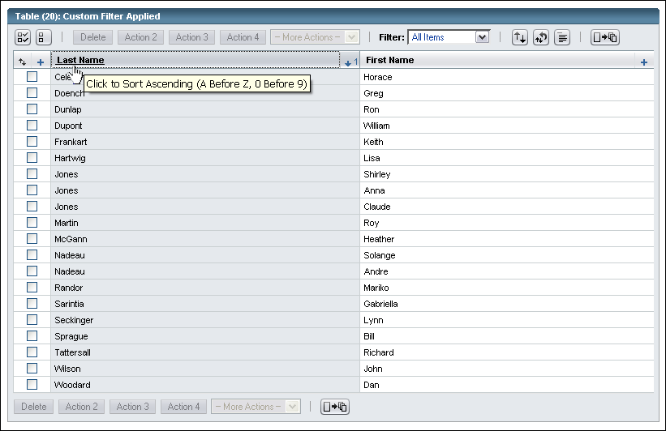
User now hovers over icon to add First Name to the sort:
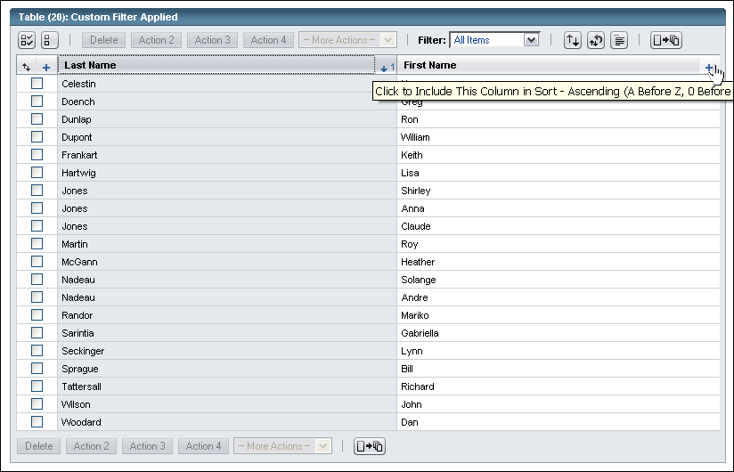
User has clicked the icon and added First Name as the secondary sort. Note how the Jones and Nadeaus are now sorted secondarily by first name:
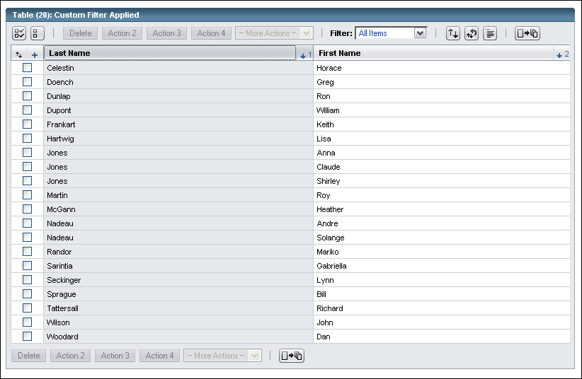
 Sortable Columns: To allow user control over table sorting, insert a sortable iconic button
Sortable Columns: To allow user control over table sorting, insert a sortable iconic button  to the right of the column heading of each sortable column. Once any column has been sorted (by default on initial display or after the user has performed a sort), all other sortable iconic buttons change to the Add to Sort iconic button
to the right of the column heading of each sortable column. Once any column has been sorted (by default on initial display or after the user has performed a sort), all other sortable iconic buttons change to the Add to Sort iconic button  to allow them to be added as secondary sorts.
to allow them to be added as secondary sorts.
 Indicating Which Columns are Sortable: In most cases, all columns in a given table should support sorting. If doing so is not possible, however, do not display the sort button arrow icons or Add to Sort icons for the columns that cannot be sorted.
Indicating Which Columns are Sortable: In most cases, all columns in a given table should support sorting. If doing so is not possible, however, do not display the sort button arrow icons or Add to Sort icons for the columns that cannot be sorted.
 Initial Sort: When
first displaying a table, sort the data using a default sort. If there is a natural sort order to the table, it may make sense to initially display the table in that order. Otherwise, indicate the primary sort and its direction by showing the up or down sort arrow
Initial Sort: When
first displaying a table, sort the data using a default sort. If there is a natural sort order to the table, it may make sense to initially display the table in that order. Otherwise, indicate the primary sort and its direction by showing the up or down sort arrow 
 instead of the sortable iconic button, label that sort arrow with the number 1 to indicate it is the primary sort, and shade that column.
instead of the sortable iconic button, label that sort arrow with the number 1 to indicate it is the primary sort, and shade that column.
 Ascending vs. Descending: Use the following definitions for ascending and descending sort order:
Ascending vs. Descending: Use the following definitions for ascending and descending sort order:
These definitions are based on usability testing and on the Java Look and Feel Design Guidelines: Advanced Topics at http://java.sun.com/products/jlf/at/book/index.html.
 Default Sort Direction: The default sort direction for each column should be chosen based on putting on top the values which the user is most likely to be interested in -- for example, the selected items for the selection checkbox column, or the largest values for a monetary column. For columns that display quantities or dates, which values of that particular column the user will likely be most interested in will determine the default sort order.
Default Sort Direction: The default sort direction for each column should be chosen based on putting on top the values which the user is most likely to be interested in -- for example, the selected items for the selection checkbox column, or the largest values for a monetary column. For columns that display quantities or dates, which values of that particular column the user will likely be most interested in will determine the default sort order.
 Changing the Primary Sort: Allow users to change to a new primary sort by clicking the column header of another column. When the user changes to a new primary sort column, indicate the new primary sort and its direction by showing the up or down sort arrow
Changing the Primary Sort: Allow users to change to a new primary sort by clicking the column header of another column. When the user changes to a new primary sort column, indicate the new primary sort and its direction by showing the up or down sort arrow 
 (see table below) instead of the sortable iconic button, label that sort arrow with the number 1 to indicate it is the primary sort, and shade that column. The arrow of the previous sort column should return to the sortable iconic button. However, the direction it was last sorted by should be remembered so if the user changes the primary sort back to that column, it first sorts in the previous sort direction.
(see table below) instead of the sortable iconic button, label that sort arrow with the number 1 to indicate it is the primary sort, and shade that column. The arrow of the previous sort column should return to the sortable iconic button. However, the direction it was last sorted by should be remembered so if the user changes the primary sort back to that column, it first sorts in the previous sort direction.
 Adding Secondary Sorts: Allow users to secondarily sort additional columns by clicking the Add to Sort icons of those columns. These columns will become secondary sorts, and should initially default to the last sort direction used (if any) or to a logical default direction as described above. Indicate the secondary sort and its direction by showing the up
Adding Secondary Sorts: Allow users to secondarily sort additional columns by clicking the Add to Sort icons of those columns. These columns will become secondary sorts, and should initially default to the last sort direction used (if any) or to a logical default direction as described above. Indicate the secondary sort and its direction by showing the up  or down
or down  sort arrow, instead of the Add to Sort icon, and label that sort arrow with the sort number 2 to indicate it is the second sort. Unlike the primary sort column, do NOT shade additional sort columns.
sort arrow, instead of the Add to Sort icon, and label that sort arrow with the sort number 2 to indicate it is the second sort. Unlike the primary sort column, do NOT shade additional sort columns.
 Adding Tertiary and Additional Sorts: Do the same as the above for any additional sorts the user adds, using number 3 on.
Adding Tertiary and Additional Sorts: Do the same as the above for any additional sorts the user adds, using number 3 on.
 Reversing Sorts: Allow users to reverse a column's sort order by clicking the sort arrow button of any sorted column to reverse the sort order. As a result, the direction of the sort arrow button reverses, the column is sorted in the opposite direction, and the page is repainted with this new sort. Which column is the primary sort column does not change.
Reversing Sorts: Allow users to reverse a column's sort order by clicking the sort arrow button of any sorted column to reverse the sort order. As a result, the direction of the sort arrow button reverses, the column is sorted in the opposite direction, and the page is repainted with this new sort. Which column is the primary sort column does not change.
 Order for New Objects: Insert new objects in the table based on the current sort order.
Order for New Objects: Insert new objects in the table based on the current sort order.
 Tool Tips: Provide a tool tip for each sort arrow button and sortable column header as described
below.
Tool Tips: Provide a tool tip for each sort arrow button and sortable column header as described
below.
The following table specifies the tool tips for all individual-column sorts and multi-column sorts. The information provided by a tool tip depends on whether each column is the first or subsequent column being sorted, and also depends on the datatype within the column.
When no sort exists:
The sort arrow buttons and sortable column headers both have the tool tip:
Click to Make This the Primary Sort Column – [value from table below for default sort order]
After one or more columns have been sorted (or if any are sorted by default):
The column header tool tips for the sorted column(s) become:
Click to Sort [value from table below for the same direction as currently sorted]The sort arrow button tool tips for the sorted column(s) become:
Click to Sort [value from table below for the opposite direction as currently sorted]The column header tool tips for all sortable but currently unsorted column(s) become:
Click to Sort By This Column Only – [value from table below for default sort order]The tool tips for the
icons are :
Click to Include This Column in Sort – [value from table below for default sort order]
| Datatype in Column | Tool Tip for Up Arrow, and for Column Headers and |
Tool Tip for Down Arrow, and for Column Headers and |
|---|---|---|
| Date | Ascending (Oldest Dates First) | Descending (Newest Dates First) |
| Character | Ascending (A Before Z) | Descending (Z Before A) |
| Numeric Value (monetary amounts, quantities, and so on) | Ascending (Smallest Values First) | Descending (Largest Values First) |
| Checkbox or Radio Button | Ascending (Selected Items First) | Descending (Unselected Items First) -- only available for tables which allow non-displayed selections (see 9.4.5 Maintaining Non-Displayed Selections for more information). |
| Alarms | Ascending (Least Severe First) | Descending (Most Severe First) |
| Strings | Ascending (A Before Z, 0 Before 9) | Descending (Z Before A, 9 Before 0) |
| Datatype Cannot Be Determined | Ascending | Descending |
 To implement the tool tips, place the appropriate text in the HTML "title" attribute for the image.
To implement the tool tips, place the appropriate text in the HTML "title" attribute for the image.
 Alt Text: Identification about which column the sort icon applies to, and about the current sort state should be placed in the HTML "alt"
attribute of the sort images for accessibility. Similarly, information about the current sort state should be placed in the HTML "alt" attribute of the column header for accessibility (identifying which column is being discussed is not necessary for the column header, as the text is directly readable). The specific alt text for each of these elements are too varied by context and situation to list here, but can be found in the table component itself.
Alt Text: Identification about which column the sort icon applies to, and about the current sort state should be placed in the HTML "alt"
attribute of the sort images for accessibility. Similarly, information about the current sort state should be placed in the HTML "alt" attribute of the column header for accessibility (identifying which column is being discussed is not necessary for the column header, as the text is directly readable). The specific alt text for each of these elements are too varied by context and situation to list here, but can be found in the table component itself.
This example shows a table with various uses of the sort arrow buttons:
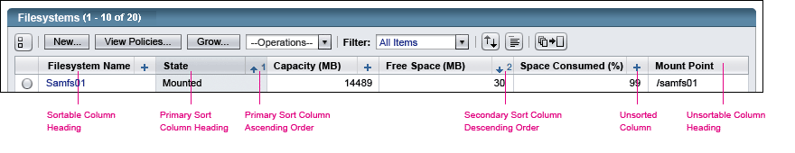
 When a table supports sorting by multiple columns, display a Multiple-Column Sort iconic button,
When a table supports sorting by multiple columns, display a Multiple-Column Sort iconic button, , in the table's action bar, to the right of any table action elements and the filter drop-down menu, if displayed. When this button is clicked:
, in the table's action bar, to the right of any table action elements and the filter drop-down menu, if displayed. When this button is clicked:
For more information on the Multiple-Column Sort iconic button (including the appropriate tool tip), see 9.5.6 View-Changing Buttons.
 Do not include a Multiple-Column Sort iconic button in the table's action bar if the table does not support sorting by more than one column.
Do not include a Multiple-Column Sort iconic button in the table's action bar if the table does not support sorting by more than one column.
 Label the Multiple-Column Sort panel "Multiple-Column Sort".
Label the Multiple-Column Sort panel "Multiple-Column Sort".
 Provide buttons labeled "OK" and "Cancel" below the UI elements provided for specifying the multiple-column sort. Make the OK button a primary button, and the Cancel button a secondary button.
Provide buttons labeled "OK" and "Cancel" below the UI elements provided for specifying the multiple-column sort. Make the OK button a primary button, and the Cancel button a secondary button.
For information about primary and secondary button styles, see 7.1 Action Buttons.
 Include help text at the top of the Multiple-Column Sort panel that explains how multiple columns can be sorted directly, without having to use the Multiple-Column sort panel. Set the maximum width of this text to 375 pixels.
Include help text at the top of the Multiple-Column Sort panel that explains how multiple columns can be sorted directly, without having to use the Multiple-Column sort panel. Set the maximum width of this text to 375 pixels.
Here is an example of a table with an inserted Multiple-Column Sort panel:
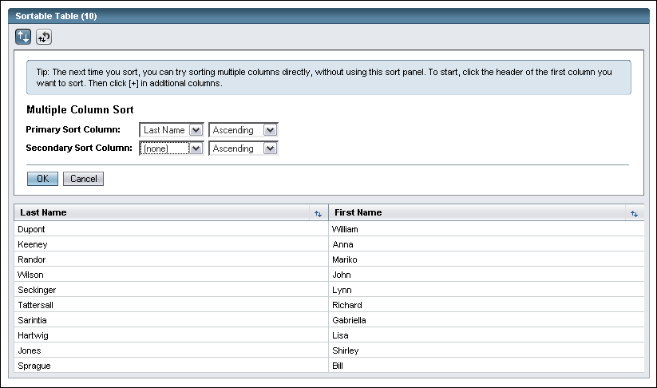
 Design the Multiple-Column Sort panel so that it displays two side-by-side drop-down
menus for each sort criterion, allowing users to specify both the column and
the sort order.
Design the Multiple-Column Sort panel so that it displays two side-by-side drop-down
menus for each sort criterion, allowing users to specify both the column and
the sort order.
Each left-hand drop-down menu allows users to choose which table column to sort. Each right-hand drop-down menu allows users to choose the sort order (ascending or descending) for that table column.
 Include up to three pairs of drop-down menus in the Multiple-Column Sort panel. Label the pairs of drop-down menus "Primary Sort Column:", "Secondary Sort Column:", and "Tertiary Sort Column:". Note that if there are only two sortable columns in the table, only two pairs of drop-down menus would be displayed.
Include up to three pairs of drop-down menus in the Multiple-Column Sort panel. Label the pairs of drop-down menus "Primary Sort Column:", "Secondary Sort Column:", and "Tertiary Sort Column:". Note that if there are only two sortable columns in the table, only two pairs of drop-down menus would be displayed.
 When
the Multiple-Column Sort panel is first displayed, use the current sort order
to determine the defaults in the drop-down menus, as applicable. Otherwise,
use "(none)" in the left-hand drop-down menu and "Ascending"
in the right-hand drop-down menu. If no columns are currently sorted, all pairs of drop-down menus would display "(none)" in the left-hand drop-down menu and "Ascending" in the right-hand drop-down menu by default.
When
the Multiple-Column Sort panel is first displayed, use the current sort order
to determine the defaults in the drop-down menus, as applicable. Otherwise,
use "(none)" in the left-hand drop-down menu and "Ascending"
in the right-hand drop-down menu. If no columns are currently sorted, all pairs of drop-down menus would display "(none)" in the left-hand drop-down menu and "Ascending" in the right-hand drop-down menu by default.
In the rare case where the current sort contains greater than three columns, only the first three columns of the sort will be indicated in the drop-down menus in the Multiple-Column Sort panel. If the user then applies a sort using the panel, the sort will simply drop to using a maximum of three columns, as specified in the drop-down menus.
 If the current sort uses only one column, indicate just that single column in the drop-down menus of the Multiple-Column Sort panel, even if a stable sort is in place (see 9.5.2 Table Sorting for more information about stable sorts).
If the current sort uses only one column, indicate just that single column in the drop-down menus of the Multiple-Column Sort panel, even if a stable sort is in place (see 9.5.2 Table Sorting for more information about stable sorts).
 Except for tables which allow non-displayed selections (see 9.4.5 Maintaining Non-Displayed Selections for more information), if the table is currently paginated, disable the value Descending when the selection column is selected as the sort column, as otherwise the selections the user has requested sorting by would be lost by sorting descending.
Except for tables which allow non-displayed selections (see 9.4.5 Maintaining Non-Displayed Selections for more information), if the table is currently paginated, disable the value Descending when the selection column is selected as the sort column, as otherwise the selections the user has requested sorting by would be lost by sorting descending.
 When the user clicks on the OK button in the Multiple-Column Sort panel, the following events take place:
When the user clicks on the OK button in the Multiple-Column Sort panel, the following events take place:
For more information about direct sorting using UI elements in the column header, see 9.5.2.1 Direct Table Sorting.
Regardless of whether a sort was applied directly, or by using the Multiple-Column Sort panel, the user will be free to make changes to the sort by either method. Note, however that the Multiple-Column Sort panel is limited to sorting only up to three columns at once.
 If the user invokes the Multiple-Column Sort panel, specifies a sort, and then presses the Cancel button, the following events take place:
If the user invokes the Multiple-Column Sort panel, specifies a sort, and then presses the Cancel button, the following events take place:
The next time the panel is displayed, base the defaults in the drop-down menus on the current sort. The sort that had been specified in the panel but never applied is lost.
This same behavior is also true if the user simply switches to a different panel such as Table Preferences or Custom Filter without applying the sort. Multiple-column sorts that had been specified but never applied are lost.
 When the Multiple-Column Sort panel is opened, move the keyboard focus to the first sort field automatically.
When the Multiple-Column Sort panel is opened, move the keyboard focus to the first sort field automatically.
 If the user presses the Enter key while on a field in the Multiple-Column Sort panel, trigger the OK button if at all possible. If this is not possible, make sure pressing Enter at least does not actuate any buttons outside the panel.
If the user presses the Enter key while on a field in the Multiple-Column Sort panel, trigger the OK button if at all possible. If this is not possible, make sure pressing Enter at least does not actuate any buttons outside the panel.
 Tool Tips: Provide a tool tip for the ascending/descending dropdown menus as described below, respectively:
Tool Tips: Provide a tool tip for the ascending/descending dropdown menus as described below, respectively:
Primary Sort Order – [value from table below for the currently selected sort order and the datatype of the currently selected table column]
Secondary Sort Order – [value from table below for the currently selected sort order and the datatype of the currently selected table column]
Tertiary Sort Order – [value from table below for the currently selected sort order and the datatype of the currently selected table column]
| Datatype of the Currently Selected Table Column | Tool Tip for Drop-down Menus Set to Ascending | Tool Tip for Drop-down Menus Set to Descending |
|---|---|---|
| Date | Ascending (Oldest Dates First) | Descending (Newest Dates First) |
| Character | Ascending (A Before Z) | Descending (Z Before A) |
| Numeric Value (monetary amounts, quantities, and so on) | Ascending (Smallest Values First) | Descending (Largest Values First) |
| Checkbox or Radio Button | Ascending (Selected Items First) | Descending (Unselected Items First) -- only available for tables which allow non-displayed selections (see 9.4.5 Maintaining Non-Displayed Selections for more information). |
| Alarms | Ascending (Least Severe First) | Descending (Most Severe First) |
| Strings | Ascending (A Before Z, 0 Before 9) | Descending (Z Before A, 9 Before 0) |
| Datatype Cannot Be Determined, or Currently Selected Table Column is "(none)" | Ascending | Descending |
Note that this variable portion of the tool tip is identical to the variable portion for direct sorting.
 To implement the tool tips, place the appropriate text in the HTML "title" attribute for the image.
To implement the tool tips, place the appropriate text in the HTML "title" attribute for the image.
Some tables have a natural sort order. This is an order of the rows which cannot be achieved by sorting any of the visible columns. It might be the order the items were entered, for example. This order is typically the order in which the table is originally displayed to the user. Whenever providing either single or multiple-cclumn sorting for a table which has an implicit sort order, consider providing a Clear Sort iconic button  so the user can return to this order.
so the user can return to this order.
 For tables which have a natural sort order, and do not have a Multiple-Column Sort panel (generally due to having only one sortable column), always provide a Clear All Sorts button. This will be the only way the user can return to the natural sort order.
For tables which have a natural sort order, and do not have a Multiple-Column Sort panel (generally due to having only one sortable column), always provide a Clear All Sorts button. This will be the only way the user can return to the natural sort order.
 For tables with a Multiple-Column Sort panel, an alternative way for users to clear all sorts exists -- the user can use the Multiple-Column Sort panel and clear all sorts by choosing "(none)" in all 3 sort column drop-down menus. However, clearing sorts in the Multiple-Column Sort panel is not very intuitive, so a Clear Sort button should still be provided if it is an important function.
For tables with a Multiple-Column Sort panel, an alternative way for users to clear all sorts exists -- the user can use the Multiple-Column Sort panel and clear all sorts by choosing "(none)" in all 3 sort column drop-down menus. However, clearing sorts in the Multiple-Column Sort panel is not very intuitive, so a Clear Sort button should still be provided if it is an important function.
For more information, see 9.5.2.2 Multiple-Column Sort Panel and 9.5.6 View-Changing Buttons.
 If provided, the Clear All Sorts button goes just to the right of the Multiple-Column Sort iconic button
If provided, the Clear All Sorts button goes just to the right of the Multiple-Column Sort iconic button  if one is present. If there is no Multiple-Column Sort iconic button, place the Clear All Sorts button to the right of any table action elements and the filter drop-down menu, if displayed.
if one is present. If there is no Multiple-Column Sort iconic button, place the Clear All Sorts button to the right of any table action elements and the filter drop-down menu, if displayed.
 When the the Clear All Sorts button is pressed, all sorting on the table is removed, and the table reverts to its natural sort order.
When the the Clear All Sorts button is pressed, all sorting on the table is removed, and the table reverts to its natural sort order.
Table preferences allow users to change additional parameters affecting how table data are displayed. These parameters may include, but are not restricted to, the following:
In most cases, changes to table preferences are maintained for the
length of a user session. However, applications may also make such
changes persistent across sessions.
 To allow users to specify table preferences, display a Table Preferences iconic button,
To allow users to specify table preferences, display a Table Preferences iconic button,  , in the table's action bar, to the right of any table action elements, the filter drop-down menu, if displayed, and any sorting iconic buttons that may be displayed. When this button is clicked:
, in the table's action bar, to the right of any table action elements, the filter drop-down menu, if displayed, and any sorting iconic buttons that may be displayed. When this button is clicked:
For more information on this button (including the appropriate tool tip), see 9.5.6 View-Changing Buttons.
Here is an example of a very simple Table Preferences panel.
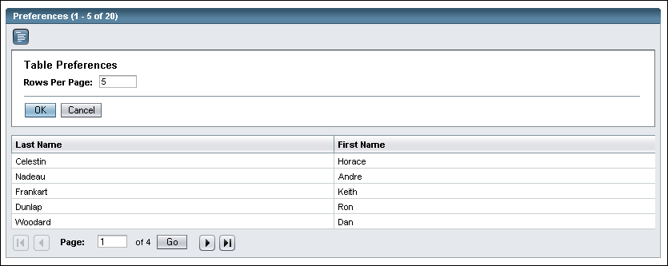
 When the Table Preferences panel is displayed, use the data from the last applied preferences to determine the defaults for the user interface elements in the Table Preferences panel. The first time the Table Preferences panel is displayed, the default settings would be specified by the application developer.
When the Table Preferences panel is displayed, use the data from the last applied preferences to determine the defaults for the user interface elements in the Table Preferences panel. The first time the Table Preferences panel is displayed, the default settings would be specified by the application developer.
 When the user clicks on the OK button in the Table Preferences panel, the following events take place:
When the user clicks on the OK button in the Table Preferences panel, the following events take place:
 If the user invokes the Table Preferences panel, specifies some preferences, and then presses the Cancel button, the following events take place:
If the user invokes the Table Preferences panel, specifies some preferences, and then presses the Cancel button, the following events take place:
The next time the panel is displayed, base the defaults for the user interface elements in the Table Preferences panel on the last applied preferences. The preferences that had been specified in the panel but never applied are lost.
This same behavior is also true if the user simply switches to a different panel such as Custom Filter or Multiple-Column Sort without applying the preferences. Preferences that had been specified but never applied are lost.
 When the Table Preferences panel is opened, move the keyboard focus to the first preferences field automatically.
When the Table Preferences panel is opened, move the keyboard focus to the first preferences field automatically.
 If the user presses the Enter key while on a field in the preferences panel, trigger the OK button if at all possible. If this is not possible due to having many preferences fields, make sure pressing Enter at least does not actuate any buttons outside the panel.
If the user presses the Enter key while on a field in the preferences panel, trigger the OK button if at all possible. If this is not possible due to having many preferences fields, make sure pressing Enter at least does not actuate any buttons outside the panel.
 When
all table rows cannot be viewed at once, provide vertical pagination in one
of two ways:
When
all table rows cannot be viewed at once, provide vertical pagination in one
of two ways:
 In
most cases, use the browser's scrollbar to scroll vertically. However, use
vertical pagination under these conditions:
In
most cases, use the browser's scrollbar to scroll vertically. However, use
vertical pagination under these conditions:
Data from various surveys recently conducted with system administrators indicate that the most common screen resolution is 1024 x 768 pixels. Given this screen resolution, it would take a table with about 25 data rows before considerable scrolling would be required to view the entire table. This includes both the action bar on the top and the action bar with detailed pagination controls at the bottom. See 9.5.4.1 Vertical Pagination User Interface Elements for more information.
 Provide pagination for a table with 25 or more rows, by default. However, it
is often helpful to allow the user to override this page size with a setting
in the Table Preferences window as shown above.
Provide pagination for a table with 25 or more rows, by default. However, it
is often helpful to allow the user to override this page size with a setting
in the Table Preferences window as shown above.
 Adjust the number 25 for your application if a number close to it would put
the data into more appropriate pages. For example, if showing data about months,
showing 24 rows per page would allow exactly two years of data per page, which
would be more helpful for the user than having the first month of the next year
added at the bottom and having that number get one farther off on each subsequent
page.
Adjust the number 25 for your application if a number close to it would put
the data into more appropriate pages. For example, if showing data about months,
showing 24 rows per page would allow exactly two years of data per page, which
would be more helpful for the user than having the first month of the next year
added at the bottom and having that number get one farther off on each subsequent
page.
 Do
not offer vertical pagination when the data will never require more than about
25 rows (set the page size to be large so it is not invoked by the component) rather
than having a few rows sometimes get pushed to another page.
Do
not offer vertical pagination when the data will never require more than about
25 rows (set the page size to be large so it is not invoked by the component) rather
than having a few rows sometimes get pushed to another page.
 If pagination is provided, no matter how few rows would be on the last page, limit the number of rows on
each page to the default or specified value. Do not exceed the number of rows
per page to avoid having few items on the last page.
If pagination is provided, no matter how few rows would be on the last page, limit the number of rows on
each page to the default or specified value. Do not exceed the number of rows
per page to avoid having few items on the last page.
 If
the user initiates a sort in a paginated table, use all the data to determine
the sort (not just the rows that were displayed before the sort was invoked).
If
the user initiates a sort in a paginated table, use all the data to determine
the sort (not just the rows that were displayed before the sort was invoked).
In a paginated table, sorting might change which data rows are displayed.
 Allow
users to toggle between displaying all data rows at once and viewing pages
of data by using vertical pagination.
Allow
users to toggle between displaying all data rows at once and viewing pages
of data by using vertical pagination.
To enable toggling between the two views, display an iconic toggle button in both the top and bottom action bars of the table. These iconic buttons are always the rightmost items in the action bars.
The iconic toggle button is placed both at the top and the bottom of the table to make the toggle feature easy to notice and access, regardless of the current state of the table (paginated or scrolled). For details about these buttons, see 9.5.4.1 Vertical Pagination User Interface Elements.
 When a table is paginated, augment the table title to reflect the number of
rows currently being displayed out of the total number of data rows in the whole
data set. For example: [Table Title] (25 - 50 of 1000).
When a table is paginated, augment the table title to reflect the number of
rows currently being displayed out of the total number of data rows in the whole
data set. For example: [Table Title] (25 - 50 of 1000).
 Any time the total number of items (after considering filtering, if any) is
one page or less, do not display any pagination elements. See 9.5.4.1
Vertical Pagination User Interface Elements for more details about the elements
to be removed.
Any time the total number of items (after considering filtering, if any) is
one page or less, do not display any pagination elements. See 9.5.4.1
Vertical Pagination User Interface Elements for more details about the elements
to be removed.
 Any time the user applies a filter to a table and the number of rows is greater
than one page, display the data using the same state (paginated or not paginated)
that the table was using before the filter was applied (or use the default state
if the table had not previously displayed greater than one page of data).
Any time the user applies a filter to a table and the number of rows is greater
than one page, display the data using the same state (paginated or not paginated)
that the table was using before the filter was applied (or use the default state
if the table had not previously displayed greater than one page of data).
 After adding a new record to a paginated table, always show a confirmation inline
alert, since the row will in some cases be placed on a page out of view and
it will be impossible to determine when that will occur.
After adding a new record to a paginated table, always show a confirmation inline
alert, since the row will in some cases be placed on a page out of view and
it will be impossible to determine when that will occur.
The UI elements necessary to support vertical pagination are as follows:
The following example shows all the UI elements necessary to support vertical pagination:
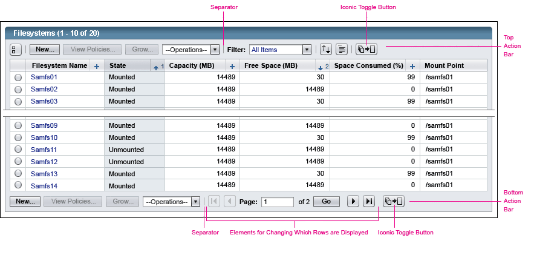
 To
enable toggling between the two views, you must display an iconic toggle
button in both the top and bottom action bars of the table. This button
is always the rightmost item in each of the table action bars.
To
enable toggling between the two views, you must display an iconic toggle
button in both the top and bottom action bars of the table. This button
is always the rightmost item in each of the table action bars.
 Use
the following guidelines for when to use a separator bar between this toggle button
and other elements in the action bars:
Use
the following guidelines for when to use a separator bar between this toggle button
and other elements in the action bars:
The iconic toggle button changes depending on the current state of the table (that is, whether it is paginated or scrolled).
 Use the following table to identify which form of the Vertical Table Pagination iconic button
to use depending on the state of the table:
Use the following table to identify which form of the Vertical Table Pagination iconic button
to use depending on the state of the table:
| When the table is currently: | The displayed button is: | The tool tip for the button is: |
|---|---|---|
| Paginated | Show Data in a Single Page | |
| Scrolled | Show Data in Multiple Pages |
 When the iconic toggle button is clicked, the viewing state of the table changes,
and the button toggles appropriately.
When the iconic toggle button is clicked, the viewing state of the table changes,
and the button toggles appropriately.
 To implement the tool tip, place the appropriate text in the HTML "title" attribute inside the image tag. Similar text should be placed in the HTML "alt" attribute of the image for accessibility. That alt text is often identical to the tool tip, but may be made shorter and simpler.
To implement the tool tip, place the appropriate text in the HTML "title" attribute inside the image tag. Similar text should be placed in the HTML "alt" attribute of the image for accessibility. That alt text is often identical to the tool tip, but may be made shorter and simpler.
 When
a table is paginated, use the following elements to allow users to change the
set of rows being displayed:
When
a table is paginated, use the following elements to allow users to change the
set of rows being displayed:
 Visually,
the elements that provide direct access to a particular page include:
Visually,
the elements that provide direct access to a particular page include:
To execute the pagination change, users may either press the Enter key while the cursor is inside the entry field or click the Go button.
 The
entry field should be large enough so that no numbers are hidden. The actual
size may be application-specific.
The
entry field should be large enough so that no numbers are hidden. The actual
size may be application-specific.
 Horizontally
arrange the vertical pagination elements from left to right in this order:
page-up buttons, direct-access elements, and page-down buttons.
Horizontally
arrange the vertical pagination elements from left to right in this order:
page-up buttons, direct-access elements, and page-down buttons.
 When
there are no more pages to view in a given direction, use the disabled version
of the buttons associated with paging in that direction.
When
there are no more pages to view in a given direction, use the disabled version
of the buttons associated with paging in that direction.
 Place
vertical pagination elements in the bottom action bar of the table. If table actions
are displayed in this bar, the vertical pagination elements are displayed
to the right of the table actions, with a separator bar between them. If not, the
vertical pagination elements are the leftmost elements in the action bar with
no separator bar.
Place
vertical pagination elements in the bottom action bar of the table. If table actions
are displayed in this bar, the vertical pagination elements are displayed
to the right of the table actions, with a separator bar between them. If not, the
vertical pagination elements are the leftmost elements in the action bar with
no separator bar.
 When vertical pagination is offered for a table, display the user interface
elements that support a paginated table when the user has chosen to see the
data displayed in multiple pages. However, do not display the following
elements when the user has chosen to see all data in a single page (when the
table is not paginated):
When vertical pagination is offered for a table, display the user interface
elements that support a paginated table when the user has chosen to see the
data displayed in multiple pages. However, do not display the following
elements when the user has chosen to see all data in a single page (when the
table is not paginated):
However, do keep the toggle button that allows users to choose to view the table in a paginated layout.
 Include a separator bar to
the left of this button if there are any elements to the left of it, unless
the preceding elements are the elements that allow users to change the set of
rows being displayed. This applies to both the top and bottom action bar locations
for this button.
Include a separator bar to
the left of this button if there are any elements to the left of it, unless
the preceding elements are the elements that allow users to change the set of
rows being displayed. This applies to both the top and bottom action bar locations
for this button.
 If the table does not offer the vertical pagination option, do not display any
of the user interface elements used to support vertical pagination:
If the table does not offer the vertical pagination option, do not display any
of the user interface elements used to support vertical pagination:
 If
at all possible, structure tables so that horizontal
scrolling is unnecessary.
If
at all possible, structure tables so that horizontal
scrolling is unnecessary.
Consider the target platform and a screen size of 1024x768 when designing the table layout.
 In
many cases, horizontal scrolling can be avoided by allowing wrapping in long
text columns like description or comment fields, and that is usually preferable
to horizontal scrolling which can scroll key identifying information out of
view.
In
many cases, horizontal scrolling can be avoided by allowing wrapping in long
text columns like description or comment fields, and that is usually preferable
to horizontal scrolling which can scroll key identifying information out of
view.
This wrapping is allowed automatically by the browser and table component, so will occur unless it is specifically turned off by the application program.
 When
horizontal scrolling is necessary, use the browser's
horizontal scrollbar to allow users to view columns that extend beyond the
visible area of the screen.
When
horizontal scrolling is necessary, use the browser's
horizontal scrollbar to allow users to view columns that extend beyond the
visible area of the screen.
The option of using horizontal pagination buttons (similar to vertical pagination buttons) has been researched. However, technical and usability issues need to be resolved before this option can be implemented.
Another option to explore in the future: allowing users to control which columns are displayed in a table, and in what order they appear. These table preferences could then be stored for future use. See 9.5.3 Table Preferences and 3.2 Pop-Up Windows guidelines for more detail.
 Use
iconic buttons for view-changing actions to distinguish them from table actions
and to reduce clutter in the table's action bar. The only exception to this is that changing the view by filtering is done by using a Filter drop-down menu (see
9.5.1 Table Filtering for details).
Use
iconic buttons for view-changing actions to distinguish them from table actions
and to reduce clutter in the table's action bar. The only exception to this is that changing the view by filtering is done by using a Filter drop-down menu (see
9.5.1 Table Filtering for details).
To reduce the confusion between actions that affect data in the table and actions that affect the display of the table itself, view-changing actions are displayed as a set of iconic buttons. The iconic buttons apply only to a specific table. View changes do not affect objects in the table, only how they are displayed. They are all optional, and should be used only as needed.
 To implement the tool tip, place the appropriate text in the HTML "title" attribute inside the image tag. Similar text should be placed in the HTML "alt" attribute of the image for accessibility. That alt text is often identical to the tool tip, but may be made shorter and simpler.
To implement the tool tip, place the appropriate text in the HTML "title" attribute inside the image tag. Similar text should be placed in the HTML "alt" attribute of the image for accessibility. That alt text is often identical to the tool tip, but may be made shorter and simpler.
 Display view-changing buttons to the right of table actions elements and the
filter drop-down menu, as shown here:
Display view-changing buttons to the right of table actions elements and the
filter drop-down menu, as shown here:
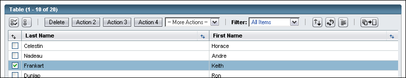
 When table actions are present, separate the set of view-changing buttons from the table actions by a separator bar so they are not confused with the table action buttons or drop-down menu.
When table actions are present, separate the set of view-changing buttons from the table actions by a separator bar so they are not confused with the table action buttons or drop-down menu.
 If no table actions or filter drop-down menu are present, the view-changing buttons should appear to the far left of the
table's action bar. In this case, no Reset, Select All, or Deselect All buttons should be shown as there are no actions to take.
If no table actions or filter drop-down menu are present, the view-changing buttons should appear to the far left of the
table's action bar. In this case, no Reset, Select All, or Deselect All buttons should be shown as there are no actions to take.
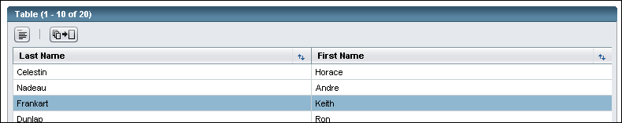
Here is the standard set of view-changing buttons.

For details on each element, see multiple column sort panel in 9.5.2.2 Multiple-Column Sort Panel, clear sort in 9.5.2.3 Natural Sort Order and Clearing Sorts, preferences in 9.5.3 Table Preferences, and the pagination iconic toggle button in 9.5.4.1 Vertical Pagination User Interface Elements, respectively.
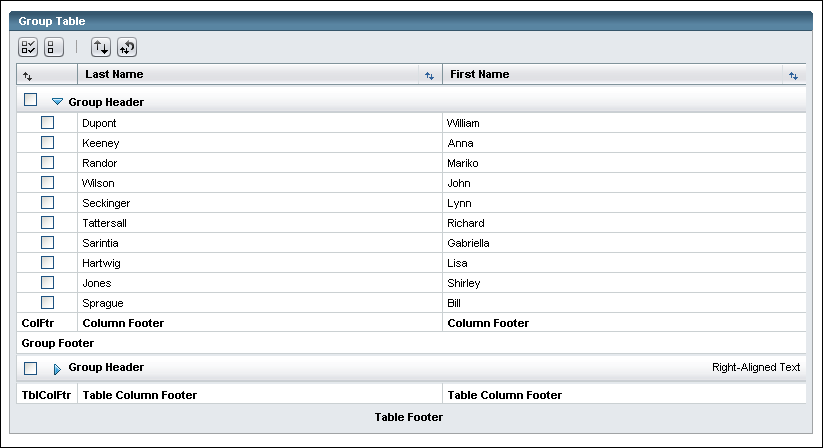
When a single-level hierarchy of values needs to be shown -- for example, all the updates applicable to a particular server, or all the servers which need a particular update -- a grouped table may be used.
 In grouped tables, all columns must be the same for all groups displayed and should align from top to bottom.
In grouped tables, all columns must be the same for all groups displayed and should align from top to bottom.
The elements of a grouped table are shown in the picture above.
Optionally, text may be placed on the right edge of the Group Header with summary information about the group that is shown whether the group is opened or closed.
Optionally, a group footer may be inserted at the bottom, potentially showing summary information about the group that is shown only when the group is opened.
Optionally, column footers applying only to the group may be shown, either instead of or in addition to column footers for the entire table.
 Group and item selection behavior:
Group and item selection behavior:
Indicating selections in collapsed groups: If the user closes a group with one or more items inside it selected, but not all items are selected, the user would have no reminder that these selections exist (the group checkbox would be unchecked and the group would be closed). Therefore, if a partial subset of the group is selected and the group is closed, the small warning icon  should be displayed next to the turner icon, as shown in the second group in the example below.
should be displayed next to the turner icon, as shown in the second group in the example below.
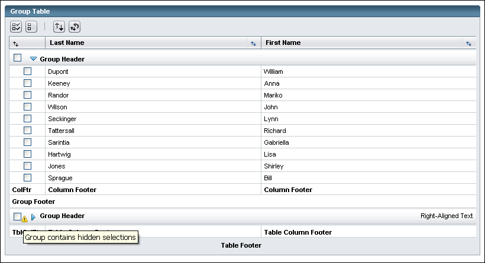
Currently, grouped tables only allow one level of hierarchy. Multiple level hierarchies are being explored, however.
Grouped tables cannot currently be paginated. However, in the future, the two features may coexist. If and when grouped tables are paginated, the pagination breaks will only occur between groups, not in the middle of a group. The number of groups to show per page will have to be set reasonably to the number of items per group (perhaps dynamically for each table).
This is the design for a next-generation web-application table, using new capabilities provided by AJAX and other technologies. This section covers the things which are different about that table. All details not covered here follow the guidelines above for standard tables. For example, column alignment of different data types can be found above, and is not repeated here.
AJAX provides many new capabilities for tables which extend what can be done in simple HTML. The new AJAX table allows the rows to scroll independently of the rest of the page (including the header information which then can remain visible) and of the column headers (allowing users to see what "7", "No", etc. are referring to once they have scrolled down). This design also uses drawers and other progressive disclosure techniques more than the standard table, to allow users to focus their attention on the data and the actions they will perform on that data, not on the myriad of controls for optionally changing how the data is shown. Last, additional new capabilities are provided beyond the standard table, including resizing, reordering and removing columns, exporting data, etc.
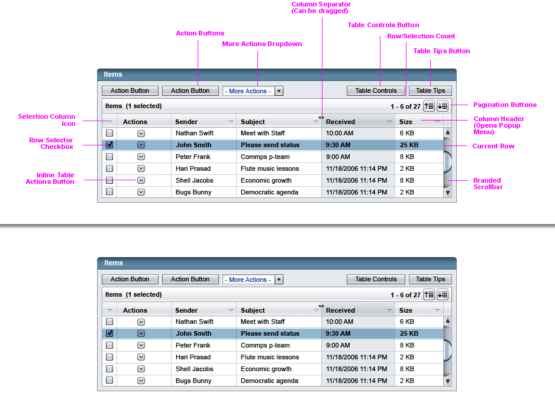
As in the standard table, the primary selection mechanism is a checkbox for each Table Row, located in a Selection Column, which can be operated by mouse or by keyboard when on the checkbox field. However, users will now also have the ability to select ranges of rows by clicking the selection checkbox on one row and then shift-clicking the selection checkbox on another, thereby selecting all rows including and between the two rows. This can be done whether or not the first row selected remains in view. By keyboard, this will be done by the user selecting a checkbox, arrowing to another row, and then holding down shift while selecting another checkbox.
Note that the selection actions above will only be possible on the selection checkbox due to possible conflicts with links or editable fields in other columns. As the user has to use the selection checkbox anyway for all actions other than inline actions, there is also no need to support control-click. For now, we will not try to support control-shift-click, which is a way to select multiple ranges at once. This is primarily for simplicity.
As in the standard table, a radio-button version will be supported. Since row-actions will handle most of the need for doing actions on individual rows, this will primarily be for allowing users to select one row of the table as a choice, such as in a wizard.
 As in standard tables, these tables will include a control for selecting/deselecting all items in a list, but will be done with a pop-up menu instead of iconic buttons. Located within the column heading for the Selection Column, clicking the control will elicit a pop-up menu as shown above.
As in standard tables, these tables will include a control for selecting/deselecting all items in a list, but will be done with a pop-up menu instead of iconic buttons. Located within the column heading for the Selection Column, clicking the control will elicit a pop-up menu as shown above.
 Choosing 'Select All' from this control should select every item in the table, not just the items that are currently visible or currently cached on the client. Of course, if some items have been excluded due to a filter, those items are not selected.
Choosing 'Select All' from this control should select every item in the table, not just the items that are currently visible or currently cached on the client. Of course, if some items have been excluded due to a filter, those items are not selected.
How to treat non-displayed selected items: It will be possible for our users to make selections that then scroll well off-screen. Should they enact an action on the currently-selected items, they may well include items that they'd forgotten about in the action and suffer unintended consequences.
To counter this, the new tables will do three things:
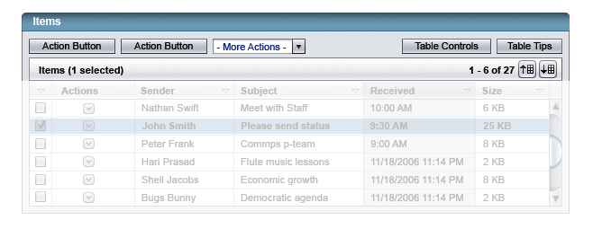
Once an item, or a number of items, have been selected, users can enact actions on the selected items using the standard methods discussed in 9.4 Table Actions. However, Embedded Table Actions (see 9.4.3.3 Using Embedded Table Actions) will be replaced with a pop-up menu as shown below.
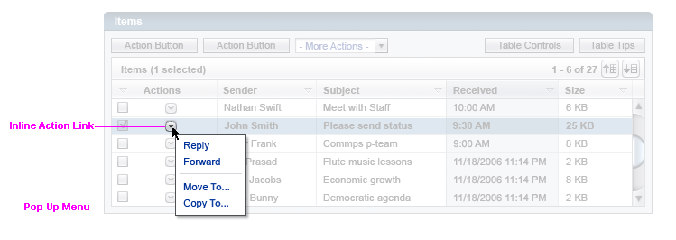
These pop-up menu actions can be done on any row if provided, and operate on the row of the icon regardless of the table's selection state. The control for opening them will become a down-arrow icon as shown above.
 These actions are like the Embedded Table Actions discussed in 9.4.3.3 Using Embedded Table Actions. However, the column used by the pop-up menu will always be on the left (right of the selection column if there is one), unlike in standard tables where the embedded actions move to the right if there is a selection column. Additionally, if multiple actions are available for a row, rather than listing each side by side, there will just be just the one icon.
These actions are like the Embedded Table Actions discussed in 9.4.3.3 Using Embedded Table Actions. However, the column used by the pop-up menu will always be on the left (right of the selection column if there is one), unlike in standard tables where the embedded actions move to the right if there is a selection column. Additionally, if multiple actions are available for a row, rather than listing each side by side, there will just be just the one icon.
 Clicking the icon will open a pop-up menu of the available actions for that row. Choosing an action will perform the action and then close the pop-up menu.
Clicking the icon will open a pop-up menu of the available actions for that row. Choosing an action will perform the action and then close the pop-up menu.
 Clicking outside the pop-up menu will close it without taking an action.
Clicking outside the pop-up menu will close it without taking an action.
 The inline actions will be operable by keyboard: If the user tabs to the icon and then presses Return or Space, the menu should open. The user can then arrow to the desired item and press Return or Space to choose it. If the user presses Escape, the menu should close without taking an action.
The inline actions will be operable by keyboard: If the user tabs to the icon and then presses Return or Space, the menu should open. The user can then arrow to the desired item and press Return or Space to choose it. If the user presses Escape, the menu should close without taking an action.
 When the user tabs through the page, they should tab right into the table, first through the controls and then into the rows themselves. The user should then be able to move by keyboard within the table, arrowing up and down to move among rows and using left and right arrows or tab/back-tab to move among cells (see exception in 9.6.3.7. Inline Editing).
When the user tabs through the page, they should tab right into the table, first through the controls and then into the rows themselves. The user should then be able to move by keyboard within the table, arrowing up and down to move among rows and using left and right arrows or tab/back-tab to move among cells (see exception in 9.6.3.7. Inline Editing).
 When at the top or bottom edge of the displayed rows, but other rows exist, the arrow key should scroll the table one row to show each next row and land on it.
When at the top or bottom edge of the displayed rows, but other rows exist, the arrow key should scroll the table one row to show each next row and land on it.
 If possible, Home should move to the first cell in the row, End should move to the last cell, and Page Up and Page Down should scroll the table by one page.
If possible, Home should move to the first cell in the row, End should move to the last cell, and Page Up and Page Down should scroll the table by one page.
 Columns may be resized horizontally by direct manipulation of the boundary-line between two column heads.
Columns may be resized horizontally by direct manipulation of the boundary-line between two column heads.
 The cursor should change when it's over the boundary-line to the cursor, to indicate that the border can be moved.
The cursor should change when it's over the boundary-line to the cursor, to indicate that the border can be moved.
 When a user has changed the column widths, that change should be retained for the next time someone logs in under that username and views that table.
When a user has changed the column widths, that change should be retained for the next time someone logs in under that username and views that table.
Table contents can be sorted by column, with the ability to set both a primary and secondary sort-order. Sorting is achieved by clicking on a column header.
 if no sort-order is currently specified, then clicking on a column head should display a pop-up menu with the following options:
if no sort-order is currently specified, then clicking on a column head should display a pop-up menu with the following options:
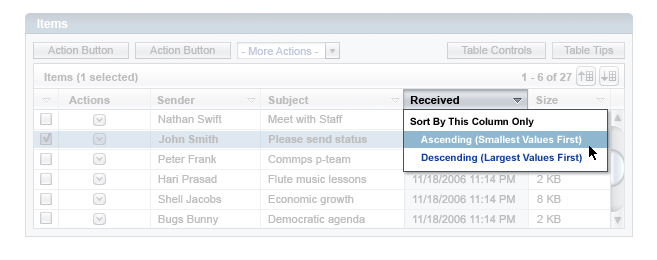
 Selecting either of those two options will establish the clicked column as the primary sort column for that table. Clicking again on the primary-sort column header would reveal the addition of one item to the resulting pop-up menu:
Selecting either of those two options will establish the clicked column as the primary sort column for that table. Clicking again on the primary-sort column header would reveal the addition of one item to the resulting pop-up menu:
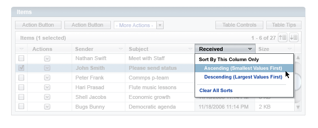
 Selecting 'Clear All Sorts' will restore the table to its default (initial load-state) sort-order.
Selecting 'Clear All Sorts' will restore the table to its default (initial load-state) sort-order.
 Additionally, one can select a secondary sort-order for the table. If a primary sort-order has already been specified, then clicking on any other column's header would yield the following pop-up menu:
Additionally, one can select a secondary sort-order for the table. If a primary sort-order has already been specified, then clicking on any other column's header would yield the following pop-up menu:
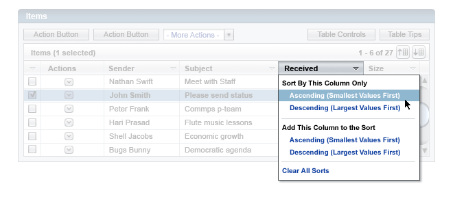
 Selecting an option from 'Sort This Column Only' would reset the primary sort-order, from whatever column currently dictates primary sort to the column clicked upon. Selecting an option from 'Add This Column to the Sort' would specify that column (with the ordering selected, Ascending or Descending) as the next sort-order for the table. 'Clear All Sorts' will restore the table to its default (initial load-state) sort-order.
Selecting an option from 'Sort This Column Only' would reset the primary sort-order, from whatever column currently dictates primary sort to the column clicked upon. Selecting an option from 'Add This Column to the Sort' would specify that column (with the ordering selected, Ascending or Descending) as the next sort-order for the table. 'Clear All Sorts' will restore the table to its default (initial load-state) sort-order.
 The separator lines, 'Sort This Column Only', and 'Add This Column to the Sort' should not be selectable.
The separator lines, 'Sort This Column Only', and 'Add This Column to the Sort' should not be selectable.
 As shown in the Selection section above, the selection column adds 'Select All' and 'Deselect All' commands at the top of this pop-up, above a separator line.
As shown in the Selection section above, the selection column adds 'Select All' and 'Deselect All' commands at the top of this pop-up, above a separator line.
 If a row has editible cells, they should be indicated with an outline box around each editable cell, when the user is on that row. No indications are done on rows other than the current row. If the user then clicks within one of the indicated cells, or arrows/tabs to it, the cell becomes editable, and defaults to being in overstrike mode so the user can immediately begin typing a new value. The user can also click a second time within the cell to instead set an insertion cursor, rather than being in overstike mode.
If a row has editible cells, they should be indicated with an outline box around each editable cell, when the user is on that row. No indications are done on rows other than the current row. If the user then clicks within one of the indicated cells, or arrows/tabs to it, the cell becomes editable, and defaults to being in overstrike mode so the user can immediately begin typing a new value. The user can also click a second time within the cell to instead set an insertion cursor, rather than being in overstike mode.
 Once editing a cell, the left and right arrow keys move by character within the editable cell rather than to the adjacent cells. However, up and down arrows will move to adjacent rows, and tabbing will move to the next cell within the row.
Once editing a cell, the left and right arrow keys move by character within the editable cell rather than to the adjacent cells. However, up and down arrows will move to adjacent rows, and tabbing will move to the next cell within the row.
 When exiting fields, data validation should be possible (to be done by the application, not the table component, but available to the application to do).
When exiting fields, data validation should be possible (to be done by the application, not the table component, but available to the application to do).
The application should load into the table only the currently shown rows and a limited number of rows below. As the user scrolls, the system continues to load the rows to display and a limited number of rows above and below (note: a recommended formula is presented below, but we will definitely have to tweak this formula to achieve this), allowing quickly moving to the areas in proximity. However, pagination controls are still provided for accessibility (screen readers otherwise cannot scroll to other data), and can be used as fast "next set" and "previous set" buttons for all users.
 Previously-viewed rows should not be cached - unless they fall within this "range of readiness" - so as not to hinder browser rendering performance. (However, edited rows may need to be cached to retain the edits made, and this may have to be adjusted for implementation issues.)
Previously-viewed rows should not be cached - unless they fall within this "range of readiness" - so as not to hinder browser rendering performance. (However, edited rows may need to be cached to retain the edits made, and this may have to be adjusted for implementation issues.)
 Implementation suggestion for row caching: might try caching of the object name column value (or perhaps sorted column value) for display during scrolling. When user stops scrolling, load values for all columns for displayed rows.
Implementation suggestion for row caching: might try caching of the object name column value (or perhaps sorted column value) for display during scrolling. When user stops scrolling, load values for all columns for displayed rows.
 The table's scrollbar should have a thumb (the draggable portion of the scrollbar) that is proportionally-sized to indicate: (a) the relative position of the currently-displayed items within the overall set; and (b) the relative 'size' of the overall set. Obviously, this will be an inexact science -- it's probably fine if the calculations are performed upon the numbers of items alone, and not the actual screen-dimensions of the line-items (which will vary based on user preferences, operating system, etc.)
The table's scrollbar should have a thumb (the draggable portion of the scrollbar) that is proportionally-sized to indicate: (a) the relative position of the currently-displayed items within the overall set; and (b) the relative 'size' of the overall set. Obviously, this will be an inexact science -- it's probably fine if the calculations are performed upon the numbers of items alone, and not the actual screen-dimensions of the line-items (which will vary based on user preferences, operating system, etc.)
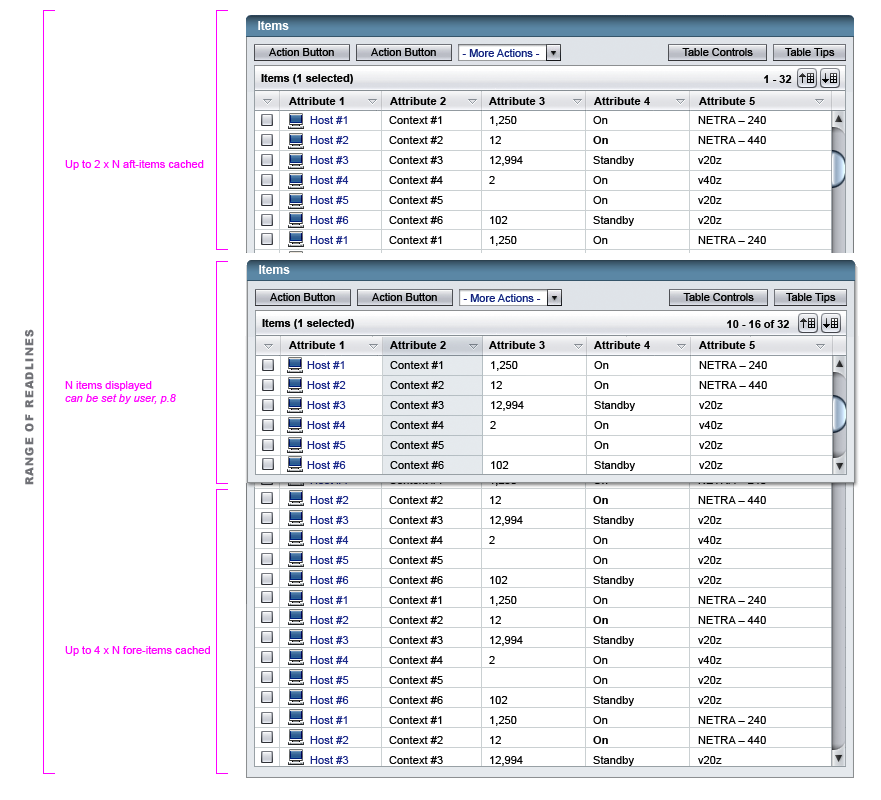
 Tables will also help orient a user by indicating location in a given table. A Location Indicator should give a textual summary of: the lines currently being displayed (by number) and the total number of lines in the table.
Tables will also help orient a user by indicating location in a given table. A Location Indicator should give a textual summary of: the lines currently being displayed (by number) and the total number of lines in the table.
 The Location Indicator should update in real-time, with no full-page (or even full-table) refresh necessary. The Indicator should refresh as the scroll-bar is dragged.
The Location Indicator should update in real-time, with no full-page (or even full-table) refresh necessary. The Indicator should refresh as the scroll-bar is dragged.
 In cases where the access-time for a data-fetch exceeds some limit (configurable by table implementor, should default to ~5 seconds), display a progress animation w/some small message. The progress indication will typically be the Busy indication described in 15.1.3 Busy Indicator, but could be a Determinate Progress Bar described in 15.1.1 Determinate Progress Bar for situations where loading progress can be known progressively and will take longer. But in shorter intervals, it is sufficient to just show the table grid empty and have it progressively filled in.
In cases where the access-time for a data-fetch exceeds some limit (configurable by table implementor, should default to ~5 seconds), display a progress animation w/some small message. The progress indication will typically be the Busy indication described in 15.1.3 Busy Indicator, but could be a Determinate Progress Bar described in 15.1.1 Determinate Progress Bar for situations where loading progress can be known progressively and will take longer. But in shorter intervals, it is sufficient to just show the table grid empty and have it progressively filled in.
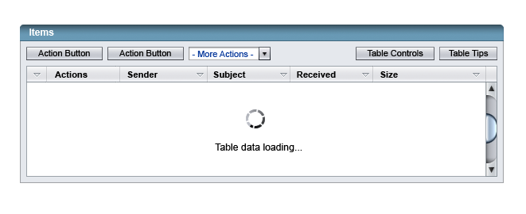
 When the user presses the Table Controls button, a drawer should open with additional table controls, and the button should turn blue. The drawer should open progressively using AJAX so it appears to slide open.
When the user presses the Table Controls button, a drawer should open with additional table controls, and the button should turn blue. The drawer should open progressively using AJAX so it appears to slide open.
 When the user presses the Table Controls button again, the drawer should progressively slide closed and the button should turn back to silver.
When the user presses the Table Controls button again, the drawer should progressively slide closed and the button should turn back to silver.
The purpose of this drawer is to keep the table presentation simple, and keep the focus on the data rather than the controls, when the user does not need them. Moreover, if there are no table controls applicable to the situation, the entire drawer goes away, along with the Table Controls button.
All table controls are context-applicable and optional and inclusion of each should be developer-specified by parameter. They fall into four groups: Filter, Export (more may be added in this section in a later release), Columns and Multiple Sort. Export opens a dialog box on top of the page, while Custom Filter (from the Filter dropdown), Columns, and Multiple Sort slide open panels below. Each if these features will be discussed further below.
 The one control directly in the controls drawer is the table filter. This is the equivalent of the Filter control in 9.5.1.1 Basic Table Filtering, and operates the same way, except that:
The one control directly in the controls drawer is the table filter. This is the equivalent of the Filter control in 9.5.1.1 Basic Table Filtering, and operates the same way, except that:
 The filter indication wording on the table title bar is shortened a bit in the AJAX table. The phrase '- Filter: "[Filter Name]" ' is added to the title as shown above. This is especially important in the AJAX table, as the panel can be closed, and the filter field will become hidden.
The filter indication wording on the table title bar is shortened a bit in the AJAX table. The phrase '- Filter: "[Filter Name]" ' is added to the title as shown above. This is especially important in the AJAX table, as the panel can be closed, and the filter field will become hidden.
 Custom Filtering in the AJAX table operates the same way as the custom filter in standard tables, as discussed in 9.5.1.2 Custom Table Filtering, but with some additional features over the version in the standard tables.
Custom Filtering in the AJAX table operates the same way as the custom filter in standard tables, as discussed in 9.5.1.2 Custom Table Filtering, but with some additional features over the version in the standard tables.
Custom Filter is composed of one or more criteria, that determine which objects are to be displayed. The user can add [ + ] a new criterion, or subtract [ - ] an existing one.
 The 'Add a Criterion' control [ + ] should appear below the list of existing items. The subtract control appears for all criteria, unless there is only one criterion left: then it is disabled.
The 'Add a Criterion' control [ + ] should appear below the list of existing items. The subtract control appears for all criteria, unless there is only one criterion left: then it is disabled.
 Criteria may be 'OR'-ed together by the user selecting 'Match All the Following' or 'AND'-ed together by the user selecting 'Match Any of the Following' in a radio button set at the top. 'Match All the Following' should be the default selection.
Criteria may be 'OR'-ed together by the user selecting 'Match All the Following' or 'AND'-ed together by the user selecting 'Match Any of the Following' in a radio button set at the top. 'Match All the Following' should be the default selection.
 Criteria should be specific to an attribute's type: for example, the selections for a time-based attribute would be different than those for an attribute with bounded values, such as Hardware Health. See more detail in 9.6.7.1 Defining a Criterion, below.
Criteria should be specific to an attribute's type: for example, the selections for a time-based attribute would be different than those for an attribute with bounded values, such as Hardware Health. See more detail in 9.6.7.1 Defining a Criterion, below.
If possible, we should permit new
types of criteria to be developed and plugged in (as well as permitting localized versions that may not necessarily use left-to-right "natural language" constructs such as those pictured above).
 Selecting 'Custom Filter...' from the Filter dropdown will open the Custom Filter panel. Like the table controls drawer, the panel should open smoothly and progressively.
Selecting 'Custom Filter...' from the Filter dropdown will open the Custom Filter panel. Like the table controls drawer, the panel should open smoothly and progressively.
 If another table controls panel is open when Custom Filter is selected, that other controls panel should smoothly slide closed before opening the Custom Filter panel. (This should actually provide a fun animation to watch, as long as it does not take too long.) The values in that other panel should remain as they were for when the panel is next open, not acted upon or discarded.
If another table controls panel is open when Custom Filter is selected, that other controls panel should smoothly slide closed before opening the Custom Filter panel. (This should actually provide a fun animation to watch, as long as it does not take too long.) The values in that other panel should remain as they were for when the panel is next open, not acted upon or discarded.
 OK should be a primary button. When the user presses the OK button, it will limit the rows in the table to those matching the criteria. The Custom Filter panel should automatically slide smoothly closed, and the Filter dropdown should change to "Custom Filter Applied".
OK should be a primary button. When the user presses the OK button, it will limit the rows in the table to those matching the criteria. The Custom Filter panel should automatically slide smoothly closed, and the Filter dropdown should change to "Custom Filter Applied".
 If the user presses the Reset button, it should reset all the fields -- clearing the text fields and setting everything back to the original presentation and the panel should be left open.
If the user presses the Reset button, it should reset all the fields -- clearing the text fields and setting everything back to the original presentation and the panel should be left open.
 If the user presses Cancel, or changes the Filter control to a predefined filter or "All Items", the panel should smoothly close without taking any further action.
The Filter field returns to its setting before the user selected 'Custom Filter...' from the Filter dropdown. If Reset was pressed, and then Cancel was pressed instead of OK, no change to the table or Custom Filter occurs.
If the user presses Cancel, or changes the Filter control to a predefined filter or "All Items", the panel should smoothly close without taking any further action.
The Filter field returns to its setting before the user selected 'Custom Filter...' from the Filter dropdown. If Reset was pressed, and then Cancel was pressed instead of OK, no change to the table or Custom Filter occurs.
After pressing OK:
 After the Custom Filter is done, and continuing while any Custom Filter criteria are in effect, the Filter field should change to showing "(Custom Filter Applied)".
After the Custom Filter is done, and continuing while any Custom Filter criteria are in effect, the Filter field should change to showing "(Custom Filter Applied)".
 Also, the table title changes to reflect a Custom Filter in effect-- especially important for if the table controls drawer is closed. The phrase "- Custom Filter Applied" is added to the table title as shown above. (Unlike Filter, we will not try to show in the title bar what exact filter was done as it could be very long to concatenate the values.)
Also, the table title changes to reflect a Custom Filter in effect-- especially important for if the table controls drawer is closed. The phrase "- Custom Filter Applied" is added to the table title as shown above. (Unlike Filter, we will not try to show in the title bar what exact filter was done as it could be very long to concatenate the values.)
 If the Custom Filter panel is closed, the user can clear the Custom Filter by using the filter field to select "All Items" or a predefined filter.
If the Custom Filter panel is closed, the user can clear the Custom Filter by using the filter field to select "All Items" or a predefined filter.
 The last Custom Filter values should automatically be saved in the table component, so even after the user goes back to seeing all rows or a predefined filter, they can still return to "Custom Filter... " in the Filter field, and have the last used values defaulted in the fields. These will be discarded when the user leaves that page or logs off, however.
The last Custom Filter values should automatically be saved in the table component, so even after the user goes back to seeing all rows or a predefined filter, they can still return to "Custom Filter... " in the Filter field, and have the last used values defaulted in the fields. These will be discarded when the user leaves that page or logs off, however.
Additionally, developers can add a "Save Custom Filter As..." button as shown. The developer will provide this functionality if needed, and the Custom Filter will be saved as an option which the user can select elsewhere in the UI and bring up this table with that Custom Filter in place.
Each line-item criterion has the following general anatomy:
| Lists all available attributes for an object-type (not just the ones selected by the user to be currently shown in the table). When a 'blank' criterion first appears, (A) should default to auto-select the first available attribute from amongst its selections (or a default value specified by the developer if one is given), and (B) should display the selections appropriate to (A). (C) would offer the data input appropriate for (B). | |
Describes the relationship between (A) and (C). Selection in this pulldown will vary, based on the data-type of the attribute selected in (A). Some examples of data-types -- and some suggestions for the resulting options under (B) -- include: For all these values, defaults should be chosen appropriately to the situation. |
|
| Data input field (or fields) used to complete the criterion. (C) is contextual to the selections made in (A) and (B). A range of input devices are possible here, including: type-in text field, pulldown menus for single-select, and date pickers (see 8.4.1 Pop-up Calendar). The field should be validated upon exit for being the appropriate datatype (disallowing characters in number fields for example). |
 When views are 'and-ed' together ('All the Following'), multiple criteria should not be allowed to reference the same attribute and use the relationship value "is". (This could result in filters that could never be satisfied, eg. 'Health' is 'Good' AND 'Health' is 'Bad'.) When the user has opted to 'OR' criteria (they've opted to show objects that match 'Any of the following criteria'), or specified values other than "is" (such as combining "is not" x and "is not" y, or combining "is after" x and "is before" y), then the same attribute can be selected multiple times.)
When views are 'and-ed' together ('All the Following'), multiple criteria should not be allowed to reference the same attribute and use the relationship value "is". (This could result in filters that could never be satisfied, eg. 'Health' is 'Good' AND 'Health' is 'Bad'.) When the user has opted to 'OR' criteria (they've opted to show objects that match 'Any of the following criteria'), or specified values other than "is" (such as combining "is not" x and "is not" y, or combining "is after" x and "is before" y), then the same attribute can be selected multiple times.)
 The optional Export button, when included and then clicked by the user, should open a pop-up window (See 3.2 Pop-Up Windows) that gives the user several options for saving the data represented by the table. The pop-up window will be created by the developer, specific to the needs of that application.
The optional Export button, when included and then clicked by the user, should open a pop-up window (See 3.2 Pop-Up Windows) that gives the user several options for saving the data represented by the table. The pop-up window will be created by the developer, specific to the needs of that application.
 Like the Table Controls button, the Columns... button will change to blue when its panel is opened. Pressing it a second time will put the Columns... button back to its standard gray color, and close the panel. Like the Custom Filter panel, the Column Selection panel should open and close smoothly and progressively using AJAX.
Like the Table Controls button, the Columns... button will change to blue when its panel is opened. Pressing it a second time will put the Columns... button back to its standard gray color, and close the panel. Like the Custom Filter panel, the Column Selection panel should open and close smoothly and progressively using AJAX.
 If another table controls panel is open when Columns... is selected, that other controls panel should smoothly slide closed before opening the Column Selection panel. (This should actually provide a fun animation to watch, as long as it does not take too long.) The values in that other panel should remain as they were for when the panel is next open, not acted upon or discarded.
If another table controls panel is open when Columns... is selected, that other controls panel should smoothly slide closed before opening the Column Selection panel. (This should actually provide a fun animation to watch, as long as it does not take too long.) The values in that other panel should remain as they were for when the panel is next open, not acted upon or discarded.
 The controls on the panel should follow the guidelines in 8.2 Add-and-Remove Idiom.
The controls on the panel should follow the guidelines in 8.2 Add-and-Remove Idiom.
 If the user presses OK, the panel should automatically slide smoothly closed, the Columns... button should return to its standard gray color, and the columns shown and column order should update on the table.
If the user presses OK, the panel should automatically slide smoothly closed, the Columns... button should return to its standard gray color, and the columns shown and column order should update on the table.
 If the user presses Reset, the columns in the panel should reset to the default set columns and their default order. However, the panel will remain open, for the user to check this is what they want, and possibly make additional changes. Only when OK is pressed should Reset overwrite the last saved column set, and only then should the table itself be modified.
If the user presses Reset, the columns in the panel should reset to the default set columns and their default order. However, the panel will remain open, for the user to check this is what they want, and possibly make additional changes. Only when OK is pressed should Reset overwrite the last saved column set, and only then should the table itself be modified.
 If the user presses Cancel, the panel should smoothly close without taking any action and the Columns... button should return to its standard gray color.
If Reset was pressed, and then Cancel was pressed instead of OK, no change to the table occurs.
If the user presses Cancel, the panel should smoothly close without taking any action and the Columns... button should return to its standard gray color.
If Reset was pressed, and then Cancel was pressed instead of OK, no change to the table occurs.
 If a column included in the current sort is removed here, that column should be removed from the sort too.
If a column included in the current sort is removed here, that column should be removed from the sort too.
 When a user has changed the columns (inclusion or order), that change should be retained for the next time someone logs in under that username and views that table if at all possible.
When a user has changed the columns (inclusion or order), that change should be retained for the next time someone logs in under that username and views that table if at all possible.
The multiple column sort panel works identically to the one in standard tables, as documented in 9.5.2.2 Multiple-Column Sort Panel, except that:
1. In addition to the OK and Cancel buttons, there will be a Reset button. This Reset button takes the place of the Clear Sort icon used in standard tables (9.5.2.3 Natural Sort Order and Clearing Sorts).
2. In order to avoid the confusing term "Tertiary Sort Column", the second and third sorts have been relabeled "Second Sort Column" and "Third Sort Column". The primary sort is still labeled "Primary Sort Column" to convey how these values relate together.
 The descriptive tooltip on the Ascending/Descending dropdown should continue to be used, as described in 9.5.2.2 Multiple-Column Sort.
The descriptive tooltip on the Ascending/Descending dropdown should continue to be used, as described in 9.5.2.2 Multiple-Column Sort.
 Like the Table Controls button, the Multiple Sort... button will change to blue when its panel is opened. Pressing it a second time, will put the Multiple Sort... button back to its standard gray color, and close the panel. Like the Custom Filter panel, the Multiple-Sort panel should open smoothly and progressively, and close the same way.
Like the Table Controls button, the Multiple Sort... button will change to blue when its panel is opened. Pressing it a second time, will put the Multiple Sort... button back to its standard gray color, and close the panel. Like the Custom Filter panel, the Multiple-Sort panel should open smoothly and progressively, and close the same way.
 If another table controls panel is open when Multiple Sort... is selected, that other controls panel should smoothly slide closed before opening the Multiple Sort panel. (This should actually provide a fun animation to watch, as long as it does not take too long.) The values in that other panel should remain as they were for when the panel is next open, not acted upon or discarded.
If another table controls panel is open when Multiple Sort... is selected, that other controls panel should smoothly slide closed before opening the Multiple Sort panel. (This should actually provide a fun animation to watch, as long as it does not take too long.) The values in that other panel should remain as they were for when the panel is next open, not acted upon or discarded.
 When the user presses OK, the panel should automatically slide smoothly closed, the Multiple Sort... button should return to its standard gray color,
and the sort order shown should update on the table.
When the user presses OK, the panel should automatically slide smoothly closed, the Multiple Sort... button should return to its standard gray color,
and the sort order shown should update on the table.
 When the user presses Reset, it should reset the fields to the sort which had been in effect when the panel was opened. (If there was no sort in effect when the panel was opened, reset the left column dropdowns to "None" and the right column dropdowns to "Ascending".) However, the panel will remain open, for the user to check this is what they want, and possibly make additional changes. Only when OK is pressed should this reset column set overwrite the last saved custom one, and only then should the table itself be modified.
When the user presses Reset, it should reset the fields to the sort which had been in effect when the panel was opened. (If there was no sort in effect when the panel was opened, reset the left column dropdowns to "None" and the right column dropdowns to "Ascending".) However, the panel will remain open, for the user to check this is what they want, and possibly make additional changes. Only when OK is pressed should this reset column set overwrite the last saved custom one, and only then should the table itself be modified.
 When the user presses Cancel, the panel should smoothly close without taking any action, and the Multiple Sort... button should return to its standard gray color.
If Reset was pressed, and then Cancel was pressed instead of OK, no change to the table sort occurs.
When the user presses Cancel, the panel should smoothly close without taking any action, and the Multiple Sort... button should return to its standard gray color.
If Reset was pressed, and then Cancel was pressed instead of OK, no change to the table sort occurs.
 Unlike with Custom Filter, only columns currently shown should be included in the sort column dropdowns.
Unlike with Custom Filter, only columns currently shown should be included in the sort column dropdowns.
Spanning Headers will work similarly to standard tables, as shown near the bottom of 9.1.2 Table Characteristics. If there are 2 or more columns which form a subset group, or are variations on a type of value, they can be grouped together under a spanning column header. This just shows the different appearance in the AJAX table.
 When the user clicks the Table Tips button, a panel should open with table tips, and the button should change to blue. The panel should open progressively using AJAX so it appears to slide open.
When the user clicks the Table Tips button, a panel should open with table tips, and the button should change to blue. The panel should open progressively using AJAX so it appears to slide open.
 If the table controls drawer is open when Table Tips is clicked, the controls drawer (and any panels open from it) should smoothly slide closed before opening the Table Tips panel.
(This should actually provide a fun animation to watch, as long as it does not take too long.)
If the table controls drawer is open when Table Tips is clicked, the controls drawer (and any panels open from it) should smoothly slide closed before opening the Table Tips panel.
(This should actually provide a fun animation to watch, as long as it does not take too long.)
 When the user presses the Table Tips button again, or clicks Close, the Table Tips panel should progressively slide closed and the button should turn back to silver. If the table controls drawer and possibly panels on it had been open before, they should be restored to the open state they were in previously, again sliding open smoothly. This will keep the Table Tips button from being destructive and losing where you were when inadvertantly clicked.
When the user presses the Table Tips button again, or clicks Close, the Table Tips panel should progressively slide closed and the button should turn back to silver. If the table controls drawer and possibly panels on it had been open before, they should be restored to the open state they were in previously, again sliding open smoothly. This will keep the Table Tips button from being destructive and losing where you were when inadvertantly clicked.
The exact text shown in the table tips panel above may change later, and should be just considered preliminary for now.
Grouped Tables will work similarly to standard tables, as described in 9.5.7 Grouped Tables. However:
 Each group opens and scrolls independently. If a group is closed, no scrollbar or column header set for it is shown (as shown for Flagged Messages above). When a group is opened, a scrolling area is opened along with column headers above it, making the total table height taller.
Each group opens and scrolls independently. If a group is closed, no scrollbar or column header set for it is shown (as shown for Flagged Messages above). When a group is opened, a scrolling area is opened along with column headers above it, making the total table height taller.
 The height of each group's table should be a maximum fixed size (shortened to fit if the number of rows -- plus the footer, if any -- is less than that maximum). That maximum (shown as 5 lines above) should at least be developer-specified, and may be changeable by a user preference.
The height of each group's table should be a maximum fixed size (shortened to fit if the number of rows -- plus the footer, if any -- is less than that maximum). That maximum (shown as 5 lines above) should at least be developer-specified, and may be changeable by a user preference.
| Privacy Policy | Terms of Use | Trademarks | Copyright 2007 Sun Microsystems, Inc. |